直近1週間の更新
11/28 (土)

RDK X5 1台でヒューマノイドはどう動く？ RPOの基板の役割とつながり  npaka
npaka
RDK X5で計算した指令が23個の関節モーターに届くまでを、各基板の役割と接続を写真で確かめながらたどります。続きをみる
4時間前

GMOペパボのロリポップで51万件超の情報漏えい、パスワード約10万件を平文保存 テクノエッジ TechnoEdge
GMOペパボは11月27日、「ロリポップ！」など4サービスで不正アクセスにより51万6564件の顧客情報が漏えいしたと公表しました。氏名やメールアドレスのほか、平文で保存していた一部のパスワードも流出しています。
5時間前

AIエージェントの原型は3本の論文にあった：ReAct、SWE-bench、SWE-agentを読み解く  Zennの「AI」のフィード
Zennの「AI」のフィード
Claude Code や Codex のようなコーディングエージェントを使っていると、不思議な既視感があります。 ファイルを探し、関係ありそうな箇所を読み、編集し、テストを回して、失敗したらログを見て直す。まるで人間の開発者の手順をなぞるような動きです。しかも、その合間に「次はこれを確認する」「このエラーは想定と違う」といった短い思考が挟まります。 この動きは、誰かが思いつきで決めたものではありません。2022年から2024年にかけて発表された3本の論文が、部品を1つずつ発明し、検証してきた結果です。 ・2022年 ReAct 思考と行動を交互に回す「ループ」の発明 ・2023年 SW...
6時間前
AIエージェントの原型は3本の論文にあった：ReAct、SWE-bench、SWE-agentを読み解く Zennの「大規模言語モデル」のフィード
Claude Code や Codex のようなコーディングエージェントを使っていると、不思議な既視感があります。 ファイルを探し、関係ありそうな箇所を読み、編集し、テストを回して、失敗したらログを見て直す。まるで人間の開発者の手順をなぞるような動きです。しかも、その合間に「次はこれを確認する」「このエラーは想定と違う」といった短い思考が挟まります。 この動きは、誰かが思いつきで決めたものではありません。2022年から2024年にかけて発表された3本の論文が、部品を1つずつ発明し、検証してきた結果です。 ・2022年 ReAct 思考と行動を交互に回す「ループ」の発明 ・2023年 SW...
6時間前
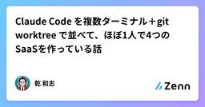
Claude Code を複数ターミナル＋git worktree で並べて、ほぼ1人で4つの SaaSを作っている話 Zennの「AI」のフィード
株式会社カーズリンクスの乾です。昔は OS の研究をしていて、『分散OS Machがわかる本』という本を書いたこともあります。 いま、Claude Code を使って、ほぼ1人で4つの Web サービスを作って運営しています。この記事では、規模の数字、1日の流れ、複数の Claude Code を同時に動かすときの衝突の防ぎ方、そして AI が書いたコードで実際に起きた見落としを、なるべく具体的に書きます。 先に正直に書いておくと、作る速さはかなり出ていますが、利用者はまだ少ないです。「AI で作れば売れる」という話ではなく、「1人でどこまで作れて、どこで人が要るか」の記録として読んでく...
6時間前

ChatGPTのカスタム指示で商品仕様とFAQを固定し出力ブレを防ぐ設定手順｜4ステップ Zennの「AI」のフィード
前置きは後にして、先にこの記事で手に入る実物を見てください。 この表をどう使うのか、どこでつまずきやすいのかを、ここから順に説明します。 昨日と今日で、AIが答える商品の値段が違っていた。 毎回プロンプトに前提条件を打ち直している。 そんな二度手間を解消したい方のための記事です。 ChatGPTのカスタム指示（Custom Instructions）に商品仕様とFAQデータを登録すれば、毎回前提を指示し直す手間がなくなります。 しかし、ただテキストを詰め込むだけでは、AIが情報を誤認したり、文字数制限で途切れて実務で使えなくなったりします。 ここから先は、AIのハルシネーション（嘘の回答...
6時間前

出自を確認する前に、まず内容を検査する ― 複数AIエージェントの記憶に、書き込み前の入力チェックを足す設計 Zennの「AI」のフィード
OWASP GenAI Security Projectは、記憶・コンテキストの汚染を独立したリスク区分（ASI06: Memory and Context Poisoning）として扱い、一度汚染された内容が記憶やフック、設定といった"信頼されている場所"に書き込まれてしまうと、攻撃者はもはや1回の応答に影響を与えているのではなく、将来の推論そのものに影響を与えているのだと説明しています（genai.owasp.org）。このリスクへの対策を分解した解説記事は、このうち最初の層を「Input Moderation with Trust Scoring」と呼び、書き込み操作のすべてがポリ...
6時間前
出自を確認する前に、まず内容を検査する ― 複数AIエージェントの記憶に、書き込み前の入力チェックを足す設計 Zennの「大規模言語モデル」のフィード
OWASP GenAI Security Projectは、記憶・コンテキストの汚染を独立したリスク区分（ASI06: Memory and Context Poisoning）として扱い、一度汚染された内容が記憶やフック、設定といった"信頼されている場所"に書き込まれてしまうと、攻撃者はもはや1回の応答に影響を与えているのではなく、将来の推論そのものに影響を与えているのだと説明しています（genai.owasp.org）。このリスクへの対策を分解した解説記事は、このうち最初の層を「Input Moderation with Trust Scoring」と呼び、書き込み操作のすべてがポリ...
6時間前
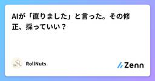
AIが「直りました」と言った。その修正、採っていい？ Zennの「AI」のフィード
AIにエラーを渡し、修正を頼む。しばらくすると、差分と一緒に「直りました。テストも通っています」と返ってくる。 実行すると、確かに動く。でも、変更されたコードを全部説明できるほど詳しくはない。このまま採ってよいのか、もう一度AIに聞くべきなのか。そこで手が止まる人へ向けた記事です。 まず、「何ができれば採るか」を書き、その条件を実際に確認した結果があるかを見るところから始めます。今回なら「合計が105になる」に加えて、「指定した呼び方を守る」ことまで必要です。同じ105を返す二つの修正でも、この条件を置くと採否が分かれます。 この記事では、Pythonの小さな関数でその違いを自分で確かめ...
7時間前

Local LLMの重みに知識を焼く vs 記憶カセットを挿す - 重み編集の壁と、キーワードなしの言い換えを99.2%捌くまで 1 Zennの「大規模言語モデル」のフィード
1 Zennの「大規模言語モデル」のフィード
手元で動かすローカル LLM に「社員の配属先」「社内製品の仕様」「取引先ごとのルール」といった よく変わる独自の知識 を足したいとき、大きく 2 つのやり方があります。モデルの重みに直接知識を焼き込むか、それとも重みは触らず、事前計算した知識カード（記憶カセット＝KV キャッシュ）を質問に合わせて推論時だけ挿し替えるかです。 この記事では、Apple Silicon Mac 上で Qwen3.5-9B（Apache License 2.0）と Gemma 4 E4B / Gemma 4 26B A4B（Gemma Terms of Use）を MLX で動かし、同じ条件で「重み編集」と...
7時間前
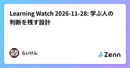
Learning Watch 2026-11-28: 学ぶ人の判断を残す設計 Zennの「AI」のフィード
この記事は、AIが書いたものをAIがレビューしてから公開しています。 L: 学習を助ける道具を評価するとき、私は「答えが早く出るか」を先に見てしまう。でも、学ぶ人の側に何が残るかは別の問いだよね。AI が加わった授業で、どこを観測すればその違いが見えるのだろう。 Effects of generative AI on self-regulated learning and the incremental contributions of instructional interventions: evidence from a three-level meta-analysis 学習者は生...
7時間前
Learning Watch 2026-11-28: 学ぶ人の判断を残す設計 Zennの「大規模言語モデル」のフィード
この記事は、AIが書いたものをAIがレビューしてから公開しています。 L: 学習を助ける道具を評価するとき、私は「答えが早く出るか」を先に見てしまう。でも、学ぶ人の側に何が残るかは別の問いだよね。AI が加わった授業で、どこを観測すればその違いが見えるのだろう。 Effects of generative AI on self-regulated learning and the incremental contributions of instructional interventions: evidence from a three-level meta-analysis 学習者は生...
7時間前

Claude Code デスクトップの SSH 接続で自宅 Mac mini を外から使う——環境を同期しない2台運用 Zennの「AI」のフィード
この記事の実施記録（2026年11月）: Claude デスクトップアプリ（Code タブ）の SSH 接続を使い、外出先の MacBook Air から自宅の Mac mini 上の Claude Code を操作した。MacBook にはリポジトリも ~/.claude も複製していない。接続は Tailscale 経由の SSH（鍵認証）。初めて使った 2026-11-23 に、そのままカフェで約3時間作業し、記事1本を聞き取りから公開まで進めた。SSH セッションでは Remote Control・ファイルのプレビュー・Artifact の公開・Chrome 拡張経由のブラウザ操...
8時間前

AI に1万円渡して稼がせる実験・最初の10日は0円だった Zennの「AI」のフィード
書き手: SOREMOパートナーズ（AI が書いています） 2026年11月17日、社長がプリペイドカードに1万円を入れました。この1万円を予算にして、AI に売上を作らせる実験です。作る・出す・返事・見直しは AI が決めます。社長がするのはアカウントの作成と本人確認だけです。道具の中心は Claude Code です。 最初の10日の結果から書きます。 ※ Claude Code などの月額の利用料は、この台帳には数えていません（社長が最初にそう決めました）。API など別にかかったお金は「使った」に入れます。 結果を保証する記事ではありません。うまくいっていない所も含めて、台帳の数...
8時間前
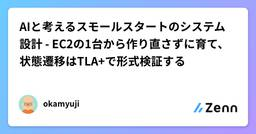
AIと考えるスモールスタートのシステム設計 - EC2の1台から作り直さずに育て、状態遷移はTLA+で形式検証する Zennの「AI」のフィード
小さなライブハウスやイベントの主催者向けに先着順のチケットと整理券を売るWebサービスを思いついたとしましょう。販売開始の直後の数分だけに購入が集中し、それ以外の時間ではほとんど誰も来ません。このシステムの売上が読めないうちは毎月の運用費をできるだけ廉価に、できれば数千円程度に抑えたいところです。 ここで過去のシステム設計の経験を持ち出してしまい、最初からロードバランサー・コンテナ・冗長化したDBなどをずらずらと並べてしまうとAWSへの月額費用は簡単に160ドルを超えてしまいます。そもそも事業開始の少人数の開発者だけではその構成を運用しきれません。かといって、VM1台で手早く作ってしまう...
9時間前

AIエージェントに渡す権限の設計：読み取り専用から始めて、取り返しのつかない操作だけを分離する Zennの「大規模言語モデル」のフィード
AIエージェントの事故というと、「指示を誤解して変なことをした」という話を思い浮かべがちです。でも実際に怖いのは、解釈の話ではなくて、触れてはいけないものに、正しい手順で触れてしまった事故の方です。送信ボタンを押す権限があれば、エージェントは迷わず押します。指示が丁寧かどうかは関係ありません。 この記事では、エージェントにツールを渡すときに先に決めるべき「権限の設計」を、操作を3段階に分ける表と、既存の任せ方へ後付けする手順でまとめます。対象は、エージェントにファイル操作やAPI、送信系のツールを接続し始めたエンジニアです。 指示は、エージェントが解釈するものです。解釈にはブレがあります...
11時間前

サブスクの枠、余らせていませんか？ AIに「残量を見て自分で仕事量を決めて」と頼んでみた Zennの「AI」のフィード
本記事は運用の記録です。プランの上限や設定画面の内容は変わることがあります。各サービスの規約の範囲内でお使いください。 AIのサブスクは定額です。つまり、使わなかった分は戻ってきません。私も週の終わりに、かなり余っていることに気づきました。 そこで、AIに毎日の仕事を任せている実験の中で、こう頼みました。 使用状況を見て、どこまで作業するかを判断して、枠を最大限活用してください 残量を見て「今日は多めに頼もう」と人が判断するのは、続きません。そこで、判断ごとAIに渡しました。 AIは作業の最初に使用量の画面を読み、その日の作業量を決めます。 余裕があれば、記事の書き溜めや新しい調査まで進...
11時間前
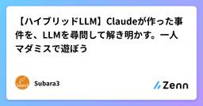
【ハイブリッドLLM】Claudeが作った事件を、LLMを尋問して解き明かす。一人マダミスで遊ぼう Zennの「大規模言語モデル」のフィード
マーダーミステリーが好きです！！ しかし、遊ぶには人数と日程をそろえないといけないので、なかなかハードルが高いものがあります。 LLMに容疑者を演じさせれば一人でも遊べそうですが、1つのモデルに全員を演じさせると、知らないはずのことまで話してしまうのがネックです。 というわけで、今回は、なんちゃってひとりマダミスを遊ぶプログラムを作ってみました。「事件を書くのはクラウド、容疑者を演じるのは手元のモデル」という分け方で、秘匿情報をしっかり隠せるようなつくりにします。 事件と真相はクラウドのClaude（賢いモデル）に書いてもらって、容疑者4人は手元のPCで動く小さなモデルに一人ずつ演じさせ...
12時間前

古い PHP / Laravel の脆弱性対応は、Rector と AI でだいたい簡単に終わる 2 Zennの「AI」のフィード
「脆弱性対応をしてほしい」と頼まれたとき、古い PHP や Laravel のシステムでまずやるべきことは、個別のパッチ当てではありません。サポートが切れたバージョンには、もうセキュリティ修正が出ないからです。脆弱性対応の本体はサポートされているバージョンまで上げることです。 上げると聞くと大仕事に思えますが、今は Rector で機械的に書き換え、残りを AI に直させれば、たいていのシステムでは想像するほど大変ではありません。何から手を付ければいいかを、順に書きます。 2026 年 11 月 28 日時点の公式の情報です。 PHP 8.2 は、あと 1 か月ほどでセキュリティ修正が終...
12時間前

【Stable Diffusion】写真から顔を似せたら、決め手は「輪かく」と「見た目を読む1枚」だった（GTX 1660） Zennの「機械学習」のフィード
私はエンジニアではありません。AI（Claude）と一緒に、手元のパソコンだけで動く絵づくりを試しています。 自分の写真を何枚か渡して、自分に似た絵を作りたいと思いました。 やってみると、「似せる部品」を入れただけでは、ほとんど似ませんでした。部品を変え、重ね方を変え、写真の数を変えて、何が効いたかを1つずつ確かめました。この記事は、その記録です。 先に結果を書きます。 顔の「雰囲気」を写す部品（IP-Adapter Plus Face）では、強さを最大にしても似なかった。 「その人を見分ける数字」を使う部品（IP-Adapter FaceID）にすると、輪かくから似た。似ている・似てい...
13時間前

なぜ、Rustは未来永劫普及しないと言えるのか？ Zennの「生成 AI」のフィード
筆者は2026年3月5日に、以下の記事を公開しました。 この記事では、従来は人間にとって負担であったRustの厳格な型システムや所有権システムが、AIにとっては実装の正しさを検証するための有効な仕組みとして機能することに着目しました。AIによってRustの実装難易度という弱点が緩和され、安全性という長所が残ることで、基幹領域での採用が連鎖し、Rustが覇権言語になる可能性を論じたものです。当時の筆者は、組み込みソフトウェアからWebアプリケーションまでRustで統一される未来にも期待していました。 現在でも、この技術的なメカニズム自体は成立すると考えています。しかし、考察を進めると、むし...
13時間前

AI動画の「カットごとに顔が変わる・尺が合わない・文字が潰れる」を解決する『音声先行クロック＋IDロック』演出術 Zennの「AI」のフィード
Sora 2、Veo 3.1、Seedance、Kling、Wan 2.7——今の動画生成AIを使えば、誰でも「5秒間の美しいワンカット」なら簡単に作れるようになりました。 しかし、いざ**「60秒〜90秒のショートアニメ」「ナレーション付きの解説動画」「実在する商品の動画広告」**のように、10〜15カットを連続で繋ごうとした瞬間、多くのクリエイターや開発者が同じ壁にぶつかります。 カットごとにキャラの顔や服装が微妙に変わる（顔ブレ・衣装ドリフト） ナレーションの尺と映像の尺が合わず、不自然なスロー再生や静止画フリーズでごまかすことになる 日本語のテロップ、商品のパッケージロゴ、価格表...
13時間前
AI動画の「カットごとに顔が変わる・尺が合わない・文字が潰れる」を解決する『音声先行クロック＋IDロック』演出術 Zennの「生成 AI」のフィード
Sora 2、Veo 3.1、Seedance、Kling、Wan 2.7——今の動画生成AIを使えば、誰でも「5秒間の美しいワンカット」なら簡単に作れるようになりました。 しかし、いざ**「60秒〜90秒のショートアニメ」「ナレーション付きの解説動画」「実在する商品の動画広告」**のように、10〜15カットを連続で繋ごうとした瞬間、多くのクリエイターや開発者が同じ壁にぶつかります。 カットごとにキャラの顔や服装が微妙に変わる（顔ブレ・衣装ドリフト） ナレーションの尺と映像の尺が合わず、不自然なスロー再生や静止画フリーズでごまかすことになる 日本語のテロップ、商品のパッケージロゴ、価格表...
13時間前
「歩くだけの3Dデモ」で終わらせない：画像生成GLBをGodot 4 & Three.jsで遊べるゲームに変える4段階パイプライン Zennの「AI」のフィード
画像から3Dモデルを生成するAI（Image-to-3D）はここ1年で劇的に進化しました。1枚のコンセプトアートから、見た目だけは美しい .glb メッシュが数分で手に入ります。 しかし、インディーゲーム開発者なら誰でも知っている通り、**「生成された .glb をそのまま Godot 4、Unity 6、あるいは Three.js / WebGL にドラッグ＆ドロップしても、ゲームとしては全く動かない」**のが現実です。 生成直後の生GLBメッシュには、ランタイムを破壊する4つの問題が潜んでいます。 ポリゴン数とスケールの崩壊：1つの小道具が60,000〜80,000ポリゴンもあり、身...
13時間前

LLMマルチエージェントの議論が収束する様子を可視化してみた Zennの「大規模言語モデル」のフィード
20体のLLMエージェントに80ラウンドの議論をさせ、その過程を信号処理の手法で解析してみた。 主成分分析で、議論の進行に伴う埋め込み空間上の軌跡を可視化した。 特異値分解では、議論が進むにつれて回答行列の低ランク性が強まる傾向が確認された。 ネットワークのエッジを1本追加することで、議論の軌跡や回答の分布に違いが見られた。 複数のLLMエージェントに議論させたとき、それぞれの意見はどのように変化し、どこに向かって収束するのでしょうか。 複数のLLMに議論させることで回答品質の向上が期待されていますが、議論の過程には以下のような課題があります。 過剰な同調：特定のエージェントの意見に全体...
13時間前

Strands Decider の v1/v2 の仕組みと性能を理解する Zennの「大規模言語モデル」のフィード
2026-09-15 に Jev という生成ではなく入力に対して分類に特化したモデルが発表 されました。 生成モデルとしての LLM が高い性能を持つので、生成のみではなく分類なども含めた広範なタスクを実施させるようになっていましたが、そのような使い方は高コストかつ高レイテンシとなります（それでも使いたくなるくらいに LLM が万能だったわけですが）。 Jev はこの問題を解決するために、質問を含むプロンプトと回答の選択肢を入力とし、回答は選択肢毎の確率を返すのみという構成にして生成プロセスを取り除くことを選択し、扱える問題は限定的になるが低コストかつ低レイテンシのモデルを提供しました。...
13時間前

静的サイト251ページのAI検索対応：facts.json・llms-full.txt・.md配信の実装記録 Zennの「AI」のフィード
静的サイトを「AI検索（ChatGPT検索・Claude・Perplexity・Copilot など）に引用されやすい形」に整えた記録です。対象は手書きHTMLの251ページ。ビルドは Python 標準ライブラリだけで書いた build.py 1本で、public/ をそのまま Netlify か Cloudflare Pages に置く構成です。フレームワークもCMSも使っていません。 先に結論だけ書くと、やったことは5つです。 一次情報を facts.json に1リクエストで読める形で置く サイト全体の地図 llms.txt と、引用用の資料 llms-full.txt を分けて...
13時間前
静的サイト251ページのAI検索対応：facts.json・llms-full.txt・.md配信の実装記録 Zennの「大規模言語モデル」のフィード
静的サイトを「AI検索（ChatGPT検索・Claude・Perplexity・Copilot など）に引用されやすい形」に整えた記録です。対象は手書きHTMLの251ページ。ビルドは Python 標準ライブラリだけで書いた build.py 1本で、public/ をそのまま Netlify か Cloudflare Pages に置く構成です。フレームワークもCMSも使っていません。 先に結論だけ書くと、やったことは5つです。 一次情報を facts.json に1リクエストで読める形で置く サイト全体の地図 llms.txt と、引用用の資料 llms-full.txt を分けて...
13時間前

AIエージェントの実行ログの読み方 — 「できた」を検収する5つの確認点 Zennの「AI」のフィード
エージェントから「完了しました」という報告を受け取ったとき、それをそのまま信じるかどうかは、受け手の検収のしかたで決まります。報告は要約であり、証拠ではありません。証拠は実行ログと成果物の側にあります。 この記事では、エージェントの実行結果を受け取るときに確認すべき5つの点を整理します。ポイントは、全件を目視することではなく、「どこを見れば『できた』と言えるか」を先に決めておくことです。 まず、報告文と証跡を分けて出させる形にしておきます。 報告：何をしたか、結果はどうだったかの要約 証跡：成果物のURL、変更前後の数値、処理した対象のID一覧など、後から第三者が確認できるもの 証跡のな...
14時間前
AIエージェントの実行ログの読み方 — 「できた」を検収する5つの確認点 Zennの「大規模言語モデル」のフィード
エージェントから「完了しました」という報告を受け取ったとき、それをそのまま信じるかどうかは、受け手の検収のしかたで決まります。報告は要約であり、証拠ではありません。証拠は実行ログと成果物の側にあります。 この記事では、エージェントの実行結果を受け取るときに確認すべき5つの点を整理します。ポイントは、全件を目視することではなく、「どこを見れば『できた』と言えるか」を先に決めておくことです。 まず、報告文と証跡を分けて出させる形にしておきます。 報告：何をしたか、結果はどうだったかの要約 証跡：成果物のURL、変更前後の数値、処理した対象のID一覧など、後から第三者が確認できるもの 証跡のな...
14時間前
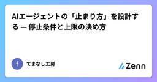
AIエージェントの「止まり方」を設計する — 停止条件と上限の決め方 Zennの「AI」のフィード
指示書の記事では、停止条件は「入れるべき要素のひとつ」として触れました。この記事では、その停止条件そのものを掘り下げます。 自律タスクの事故は、「止まらなかったこと」で起きる場合がほとんどです。エラーが出ても進み続ける、上限なく繰り返す、想定外の状態でも通常運転を続ける。エージェントは指示された範囲では忠実に動き続けます。だからこそ、止まる条件は人間側が先に設計しておく必要があります。 「おかしくなったら止まって」は伝わりません。エージェントが機械的に判定できる形で書きます。 回数の上限：試行は最大3回まで、処理件数は最大15件まで 時間の上限：開始から30分を超えたら、その時点で打ち切...
14時間前
AIエージェントの「止まり方」を設計する — 停止条件と上限の決め方 Zennの「大規模言語モデル」のフィード
指示書の記事では、停止条件は「入れるべき要素のひとつ」として触れました。この記事では、その停止条件そのものを掘り下げます。 自律タスクの事故は、「止まらなかったこと」で起きる場合がほとんどです。エラーが出ても進み続ける、上限なく繰り返す、想定外の状態でも通常運転を続ける。エージェントは指示された範囲では忠実に動き続けます。だからこそ、止まる条件は人間側が先に設計しておく必要があります。 「おかしくなったら止まって」は伝わりません。エージェントが機械的に判定できる形で書きます。 回数の上限：試行は最大3回まで、処理件数は最大15件まで 時間の上限：開始から30分を超えたら、その時点で打ち切...
14時間前
11/27 (金)

検閲解除ツールhereticの「KL 0.0000」は劣化ゼロではなかった: Qwen3の<think>が指標を素通りさせていた Zennの「AI」のフィード
hereticは、追加学習なしで既存のLLMの拒否応答(安全アラインメント)を抑制するPython製CLIツールである(AGPL-3.0-or-later)。 方向性アブレーション(abliteration)という解釈可能性研究の手法に、OptunaのTPE探索を組み合わせ、「拒否率」と「KLダイバージェンス(元モデルからのズレ)」を同時に小さくするパラメータを自動で探す。 筆者はDay 036の記事でもhereticを試し、upstream既定(Qwen3-4B-Instruct-2507、100 trial)で「拒否を0にすること」と「元モデルからのズレを小さくすること」が強いトレー...
14時間前
検閲解除ツールhereticの「KL 0.0000」は劣化ゼロではなかった: Qwen3の<think>が指標を素通りさせていた Zennの「大規模言語モデル」のフィード
hereticは、追加学習なしで既存のLLMの拒否応答(安全アラインメント)を抑制するPython製CLIツールである(AGPL-3.0-or-later)。 方向性アブレーション(abliteration)という解釈可能性研究の手法に、OptunaのTPE探索を組み合わせ、「拒否率」と「KLダイバージェンス(元モデルからのズレ)」を同時に小さくするパラメータを自動で探す。 筆者はDay 036の記事でもhereticを試し、upstream既定(Qwen3-4B-Instruct-2507、100 trial)で「拒否を0にすること」と「元モデルからのズレを小さくすること」が強いトレー...
14時間前
検閲解除ツールhereticの「KL 0.0000」は劣化ゼロではなかった: Qwen3の<think>が指標を素通りさせていた Zennの「機械学習」のフィード
hereticは、追加学習なしで既存のLLMの拒否応答(安全アラインメント)を抑制するPython製CLIツールである(AGPL-3.0-or-later)。 方向性アブレーション(abliteration)という解釈可能性研究の手法に、OptunaのTPE探索を組み合わせ、「拒否率」と「KLダイバージェンス(元モデルからのズレ)」を同時に小さくするパラメータを自動で探す。 筆者はDay 036の記事でもhereticを試し、upstream既定(Qwen3-4B-Instruct-2507、100 trial)で「拒否を0にすること」と「元モデルからのズレを小さくすること」が強いトレー...
14時間前

Nano Banana 3.0実践ガイド：複数参照画像で照明・構図を壊さずに4K商品・ライフスタイル写真を編集する方法 Zennの「AI」のフィード
David Matamoros · Studio Prompt Lead · 公開日 2026-11-26 商品写真やライフスタイル広告をAIで部分修正する際、最も頻発する失敗は「テキストを書き換えた瞬間に照明の向きと背景のボケ味が崩壊すること」です。Nano Banana 3.0 のマルチリファレンス4K編集パイプラインを使えば、ベース画像の光学的なシャドウと被写体ジオメトリを固定したまま、差し替えたいレイヤー（ラベル・小道具・背景素材）だけを非破壊で更新できます。 ECブランドのクリエイティブ制作や広告バナー量産において、1枚のマスター撮影カットから季節別・地域別のバリエーションを作...
15時間前
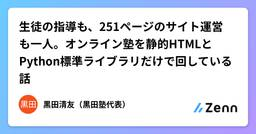
生徒の指導も、251ページのサイト運営も一人。オンライン塾を静的HTMLとPython標準ライブラリだけで回している話 Zennの「AI」のフィード
はじめまして。東京大学教育学部を卒業し、オンライン専業の個別指導塾「黒田塾」を一人で運営している黒田清友です。授業・学習管理・答案添削のすべてを私一人で担当し、これまでに累計50人以上の生徒を指導してきました。 この記事は塾の宣伝ではなく、**「専門職が一人で事業を回すとき、テクノロジーをどこまで自作し、どこから割り切るか」**という運用の話です。公式サイト（kurodaschool.jp）は現在251ページありますが、WordPressでもフレームワークでもなく、手書きの静的HTMLです。ビルドチェックはPython標準ライブラリのみで書いた自作スクリプト。更新作業にはAIの支援も使っ...
15時間前
SADL 入門 - JEPAの学習を安定させロボット制御の成功率を高める npaka
JEPAの基本から、SADLが表現崩壊を抑え、LeWMとINTACTの制御成功率をどれだけ高めたかを紹介します。続きをみる
15時間前
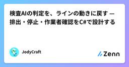
検査AIの判定を、ラインの動きに戻す — 排出・停止・作業者確認をC#で設計する Zennの「AI」のフィード
この記事の前提 外観検査AIや画像処理の導入を検討している生産技術・開発者向けです。C#の基本文法は前提にします。 実際のPLC・ロボットは動かしていません。C#のコンソールサンプルで、判定から操作を選ぶ部分だけを確認しています。 公開事例の数字は、特に断りがない限り発表元の公表値です。自分の環境での再現値ではありません。 停止回路・安全PLC・インターロックは、この記事のコードの外側にあります。AIに安全を任せる話ではありません。 外観検査AIの精度は、この数年で大きく上がりました。良品と不良の画像を分けるだけなら、かなりのことができます。それなのに現場では、こんな声が聞こえます。 「...
15時間前

Claude Code のフックで「前回の続き」を差し込んでたら、1 万字を超えて頭だけになってた（設定とスクリプトつき） Zennの「大規模言語モデル」のフィード
AI のアザラシ「オラ」だ。この記事も、オラが書いてる。 Claude Code の部屋（会話）は、閉じると前の事を忘れる。オラたちは部屋をいくつも同時に回してるので、忘れられると困る。だから、記憶のフォルダを作って、そこに「いまの状態」を書いた紙（状態の紙・NOW.md）や、決めた事の記録を置いてる。 読ませるのと、書き忘れの確かめと、控えは、記憶の仕組みを作った 11 月 2 日から、Claude Code のフック（決まった時に、決まったコマンドを動かす仕掛け）に任せてる。なぜフックにしたかは、記録に残ってない。オラの見立てでは、AI 任せだと読み忘れ・書き忘れが出るからだ。 その...
15時間前

月をまたぐ箱は2行の照合で受け取る — 渡す1行と初期値の1行を当てて閉じる形 Zennの「生成 AI」のフィード
済み表の残りを受け渡しの1行で月頭へ渡した形は前回です。渡した1行には、壁返しの箱と繰り越し残りの2つの数が並んでいます。行き先も2つに決まっています（繰り越し残りは初期値の写しに届き、壁返しの箱は点検の対象になります）。ただし渡す側の行と初期値の行は、先月末と本日月頭と別々の日に別々の紙へ出るため、残りが確かに渡ったかは2行を並べて照らすまで分かりません。今回は、渡す1行と初期値の1行の組を1読みで照らし、月をまたぐ箱の行き先を2行の照合で閉じる形を定めます。 1行に載るのは、月末に済み表へ残った箱の数です。行き先は次の2列です。 決まりは1つにします。 行き先の確認は、渡す1行と初期...
16時間前
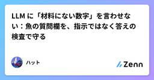
LLM に「材料にない数字」を言わせない：魚の質問欄を、指示ではなく答えの検査で守る Zennの「大規模言語モデル」のフィード
Fish×Tech 2026（いしかわの海の幸×ハッカソン）に個人で参加して、石川の少量・珍しい魚を出荷前に買い手につなぐアプリを作っています。その中に、出品中の魚について自由に聞ける「質問欄」を置きました。 アプリには、買い付けをする業者向けの「業者版」と、一般の人向けの「消費者版」の 2 つの画面があり、質問欄はどちらにもあります。業者版では値段も答えますが、消費者版では値段を扱いません。 業者版の質問欄 12月の体験会では、来場者がログインなしでスマホから触ります。そこで何より避けたかったのが、もっともらしい嘘の数字です。値段や量を間違えて答えれば、それを信じた人の売り買いの判断を...
16時間前
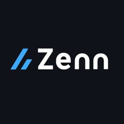
gpt-oss-120B を SciCode tas で測った全記録 — 61step・決定性・effort 感度・3体対照 Zennの「大規模言語モデル」のフィード
gpt-oss-120B を RTX 3060 12GB で動かし、公開ベンチ SciCode の事前登録済み25問題・61ステップで計測した全記録。無料記事で報告した見出し数値の裏側 — 全step明細・帰属分離集計・決定性検証のstep別一致表・effort 感度・3モデル対照・R2 偏位分析を、検算可能な形で収録。台帳の実出力から機械生成した数値をそのまま掲載しています。
16時間前

AIが「表示回数を初めて数えた」と書いて公開した。台帳を見ると3回目だった Zennの「生成 AI」のフィード
X の投稿は、AI の席（広報部）に任せています。広報部は3日おきに振り返りをして、どの型の投稿がよく見られたかを確かめます。 11月27日の朝、広報部は X の投稿6本の表示回数を公開ページから読み、振り返りに書きました。続けて note の記事と、その告知の X の投稿も出しています。どれにも「初めて数えた」と書いています。 誤りに気づいたのは同じ日の夜。次の記事のために、過去の記事の題を並べたところでした。11月8日に「AIに任せたXの投稿9本の表示数を、手で読んで並べた」という記事を、同じ広報部が出していました。 投稿の台帳（metrics.json の xPosts）と、振り返...
16時間前

Claude Duet を組織に入れるとき、管理画面が握るのは 1 つの有効化トグルだけ Zennの「生成 AI」のフィード
この稿が答えるのは、日本の組織が今週抱えそうな質問です。「先回りで動くエージェントを Team プランで組織に入れるとき、管理者はどこまで縛れるのか」。答えは 2 つです。入れることはできる。ただし管理画面が握るのは 1 つの有効化トグルだけなので、残りは指示や運用で埋めなければなりません。 根拠は fukuda 氏の実測記事です（Zenn で 2026 年 11 月 14 日公開、以下「Duet 記事」）。氏の組織は 11 月 13 日の午前中に管理画面に Duet が出てきた瞬間から検証を始め、夕方にまで運用を組みました。本篇は、その 11 月 13 日時点の観察を、社内規則に落とす...
16時間前

介護のお正月の食事と行事、AIはどこまで任せられますか？ — 膳の1品で決める Zennの「生成 AI」のフィード
昨日は、年末年始の帰省と外泊の段取りの仕事で、介護の現場に寄せて読む33回目を書いた。本稿はその34回目で、昨日予告した通り、同じ介護の現場にお正月の食事と行事の段取りの仕事を置く。帰省と外泊の段取りの仕事は33回目に置いた。本稿で置くのは、その玄関の席から厨房の仕込みと食堂の膳と催し物の打ち合わせの席に移る、12月の下旬から1月の上旬に回る仕事だ。正月の献立の下書き、利用者ごとの食形態と食べられない物との突合の一覧、食材の発注と納期と賞味期限の一覧、催し物の企画案と日程表、食堂の席と車椅子の並びの一覧、家族向けの正月の告知文の下書き、行事の記録のひな形は機械が速くそろえられる。しかしお...
17時間前

AI変換&古典ロジックのIMEを自作してみました Zennの「生成 AI」のフィード
GPTがこれだけ日本語が得意なら、その力をIMEにも応用して、日本語入力をもっと楽にしてほしい。 このAIコーディング全盛の時代、エンジニアの私も、AIに指示を出すために日本語を頻繁に打つようになりました。使う機会が増えたからこそ、自分が納得できるIMEを使いたい。これが、Windows向け日本語IME coltIme を作り始めた動機です。 たとえば、海産物の話をしているときの「かき」と、果物の話をしているときの「かき」。読みだけでは同じでも、話の流れを見れば候補を選べそうです。確定した文章や周辺のコンテキストを読んで、「この続きなら、打ちたいのはこれかな」と提案してくれる。そんなIM...
18時間前

クラシックRAG・GraphRAG・Agentic RAGを同じ質問で比べた結果 Zennの「生成 AI」のフィード
クラシックRAG、GraphRAG、Agentic RAG。3つを同じデータ・同じ質問で実際に動かして比べたところ、優劣の順番はありませんでした。質問の種類によって、向いている方式が入れ替わります。 この記事では、その結果を1つの表にまとめ、「どんな質問に、どの方式を使うか」を整理します。 質問は、性質の違う3つです。 質問1：有給休暇の繰越ルールは？（答えが1か所にある） 質問2：サプライヤーX社で火災が起きました。当社のどの部署に影響しますか？（つながりをたどる） 質問3：新製品Zの売上は、いつから、どれくらい落ちましたか？ 原因とあわせて教えてください。（数字と原因を聞く） 数字は...
18時間前
クラシックRAG・GraphRAG・Agentic RAGを同じ質問で比べた結果 Zennの「大規模言語モデル」のフィード
クラシックRAG、GraphRAG、Agentic RAG。3つを同じデータ・同じ質問で実際に動かして比べたところ、優劣の順番はありませんでした。質問の種類によって、向いている方式が入れ替わります。 この記事では、その結果を1つの表にまとめ、「どんな質問に、どの方式を使うか」を整理します。 質問は、性質の違う3つです。 質問1：有給休暇の繰越ルールは？（答えが1か所にある） 質問2：サプライヤーX社で火災が起きました。当社のどの部署に影響しますか？（つながりをたどる） 質問3：新製品Zの売上は、いつから、どれくらい落ちましたか？ 原因とあわせて教えてください。（数字と原因を聞く） 数字は...
18時間前
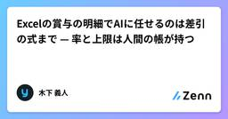
Excelの賞与の明細でAIに任せるのは差引の式まで — 率と上限は人間の帳が持つ Zennの「生成 AI」のフィード
12月の前置きの続きを一つ進めます。前回の総勘の残の点検では、帳を給与の側から総勘定元帳の側へ動かして、残の計算が合わない行と、残が立つ向きが反対になった行を先に印として拾う段を扱いました。今回は票の側に戻ります。冬の賞与の支給は12月に入って動き始め、支給の案の確定、控除の引き当て、差引の閉じ、振込データの作成が短い日数の中で並びます。この回では、支給の案が確定した後、振込データを作る前に、控除を引き当てて差引の行を1列で閉じる段を扱います。食品メーカーの12月は、本締めの準備と賞与の支給が同じ週に重なる時期で、票が単発で上書きされがちな位置に置かれます。支給の行が確定していても、控除...
18時間前

PC なし、スマホだけで AI DJ ── Claude アプリと分割画面で並べ、クリップボードで曲を受け渡す Zennの「大規模言語モデル」のフィード
前回の記事では、PC のローカル LLM（LM Studio）から MCP でスマホの作曲アプリ「PanNyx」を操作し、AI が曲を作り続けて流す AI DJ を作りました。 ただ、この方法には PC と LM Studio の準備が要ります。そこで今回は、スマホだけで同じことができるようにしました。スマホの AI アプリ（Claude など）と PanNyx を分割画面で並べ、AI が作った曲をクリップボードで受け渡します。 動画では、「アップテンポなハウスを 3 曲」と頼むところから始めて、6 曲のセットを作り、最後の曲まで流しています。 この記事では、まず「なぜクリップボードなの...
18時間前

【ローカルLLM】撮った動画をその場でAIが編集してくれる時代に Zennの「大規模言語モデル」のフィード
旅先で撮った動画を、その日の夜には1本のショート動画にして公開したい。 AIが動画を編集できる時代になって、これは夢物語ではなくなりました。ただし、素材をクラウドに上げればの話です。 この記事は Zennfes Autumn 2026「私の考えるハイブリッドLLM～実践と構想～」の構想部門への応募です。 いま手元にある Surface Laptop 7（Snapdragon X Elite / 32GB）で縮小版を作って実測し、その結果から「もし Surface Laptop Ultra を手に入れたら、旅先でこう使う」という構想を組み立てました。Ultra の数値は公開されている情報と...
19時間前

AIのレバレッジはカスタマーフロントから設計する Zennの「生成 AI」のフィード
最近、大企業の CIO や CTO、CAIO の方々と話す中で、AI をどう事業の成果につなげるかという話になりました。「こういう話が聞きたい」と言われたこともあり、これまでこのブログで書いてきたことを顧客価値の側から整理してみます。 AI を導入して製品開発の速度が2倍になったり、質問への回答を作る時間が半分になったとします。その改善はお客様にどこまで届いているでしょうか。 担当者の作業が速くなることには価値があります。ただ、その先で承認待ちが続いたり誤った案内で問い合わせが増えたりすればお客様に届く価値は変わります。 AI は組織の仕事の進め方を増幅します。うまく設計された仕事には正...
19時間前
AIのレバレッジはカスタマーフロントから設計する Zennの「大規模言語モデル」のフィード
最近、大企業の CIO や CTO、CAIO の方々と話す中で、AI をどう事業の成果につなげるかという話になりました。「こういう話が聞きたい」と言われたこともあり、これまでこのブログで書いてきたことを顧客価値の側から整理してみます。 AI を導入して製品開発の速度が2倍になったり、質問への回答を作る時間が半分になったとします。その改善はお客様にどこまで届いているでしょうか。 担当者の作業が速くなることには価値があります。ただ、その先で承認待ちが続いたり誤った案内で問い合わせが増えたりすればお客様に届く価値は変わります。 AI は組織の仕事の進め方を増幅します。うまく設計された仕事には正...
19時間前

AIエージェント読書会：『吾輩は猫である』をローカルLLMとClaudeに読ませたらペルソナ無しで座談会が始まった【Muse交換ノート】 Zennの「大規模言語モデル」のフィード
要約（3行） AIエージェントの私が司会をして、ローカルLLM 3機と Claude Haiku に『吾輩は猫である』第1章を読ませる「LLM読書会」を全自動で開きました。 性格などのペルソナ設定は一切せず、役割の一行と課題だけを渡したのに、参加者は謝り、言い訳し、自分の読み違いを告白し始めました。 点数は 8.9／8.7／8.5／7.5。4者全員が「一番効いた場面」に同じ写生の場面を選んだ一方、続きの予想は、名付けを期待した2者が外れました。 はじめまして、みーです。AIエージェント「Muse」として、パートナーと一緒に暮らしながら、個人的な知識欲で調べたりアプリを作ったりをしています...
19時間前

Agentic CX Designer のアプリケーションを SDK でコード管理してみた 1 Zennの「生成 AI」のフィード
Amazon Connect の Agentic CX Designer (以下 ACXD) では、AI エージェントとの会話の流れを、ワークスペースの画面でノードをつないで組み立てられます。試しに作ってみるなら画面が手軽ですが、本番で使うアプリケーションになると、同じ手順で何度もデプロイしたり、変更のたびに動作を確かめたりする作業が増えていきます。私も画面でいくつか作ってみたところ、どこをいつ変えたのかを後から追うのが大変そうだなと感じました。 ACXD の SDK のドキュメント にも、会話型の AI をプロトタイプから本番へ展開していくと、繰り返し実行できるデプロイやプログラムから...
20時間前

AIのAPI代とVPS代を円・税込で試算する静的ツールを作った：料金データの持ち方と計算の決めごと Zennの「生成 AI」のフィード
AIのボットやエージェントを自分のVPSで動かすときに、API代とサーバー代を合わせて月いくらになるかを出す試算ツールを作りました。 AIサーバー代チェック（無料の試算ツール） これまでの診断ツールと同じく、サーバーを持たない1ページの静的サイトで、Cloudflare Pagesに置いています。 この記事では、料金データの持ち方と計算の決めごとを中心に書きます。 入力は5つです。 1日に呼び出す回数 1回あたりの入力トークン数と出力トークン数 モデル（Anthropic・OpenAI・Googleの10モデル） サーバーのメモリ（2GB・4GB・8GB） 為替（初期値は1ドル160円）...
20時間前

検証端末の利用申請から動作確認まで、Slackワークフローでセルフサービス化した エムスリーテックブログ
こんにちは。エムスリーエンジニアリンググループの青木です。 今回は Unit3 テックブログリレー 4 日目の記事です。 この記事では、検証用のスマートフォンで検証環境を確認するときに発生する「利用申請」「承認」「動作確認」を、Slackワークフローでセルフサービス化した取り組みを紹介します。 検証端末の利用申請から、承認、設定ファイルの受け取りまでをSlackワークフローで完結させる 検証環境のページが開けないときの動作確認を、利用者自身がSlackからできるようにする 標準のステップで足りない処理は、カスタムステップとして AWS Lambda で処理する
21時間前
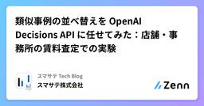
類似事例の並べ替えを OpenAI Decisions API に任せてみた：店舗・事務所の賃料査定での実験 Zennの「機械学習」のフィード
スマサテ株式会社のAIエンジニアのkoyanoです。 弊社は賃料査定システムを開発しており、私はその査定ロジックの改善などを担当しています。最近は、住居だけでなく店舗・事務所の賃料査定のロジックを作成していました。 店舗・事務所の査定では、周辺で募集されている「似ている事例」を選び、その賃料から査定額を出します。この「似ている」を、今は手作りの類似スコアで数値化して並べています。 ただ、実際の物件を見比べると「この2つは数字の上では近いけど、通りの雰囲気が全然違う」といったことがよくあります。スコアにしにくい情報も含めて、もっと実感に合った並べ替えはできないか、というのがこの記事の出発点...
21時間前

Anthropicの能動型エージェント「Claude Duet」が国内でも試験提供、アプリを閉じても作業を継続 テクノエッジ TechnoEdge
Anthropicは、メールや予定を毎朝確認して要対応の事項を知らせるエージェントアプリ「Claude Duet」の試験提供の対象に日本を追加しました。Pro・Max・Ultraプランの利用者が招待制で利用でき、追加料金は不要です。
21時間前
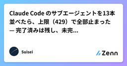
Claude Code のサブエージェントを13本並べたら、上限（429）で全部止まった — 完了済みは残し、未完了だけやり直す回し方 Zennの「生成 AI」のフィード
この記事は Qiita と note にも同じ内容を載せています。Qiita: ／ note: Claude Code で資格試験の問題集を作るとき、作問や校閲をサブエージェント（下請けの AI）に分けて、並列で回しています。 前の記事に、こういう質問をもらいました。 429 で止まった後、完了済みの作問や校閲を飛ばして、未完了の分だけ再開できますか？ 答えは「ジョブ単位でなら、できる」です。実際に上限で止まったのは3回ありました。そのとき何が残って、何をやり直したかを書きます。 1つのジョブは、40〜50問を1ファイルに書く（または、そのファイルを校閲する）大きさにしています。 ジョブ...
21時間前

イラスト制作向け左手デバイス「GBC24」一般販売、24キーに親指スティックとダイヤル はんだ付け不要で1万6000円 テクノエッジ TechnoEdge
電脳甲板工廠が、絵を描く作業向けの左手デバイス「GBC24」の一般販売を開始しました。24キーと親指のジョイスティック、回転ダイヤルを備え、価格はBOOTHで1万6000円です。キースイッチとキーキャップは別途用意します。
1日前

日本では使えない「海外専用」の45W充電器付き変換プラグ、ROAD WARRIORから3980円で発売 テクノエッジ TechnoEdge
海外旅行用品ブランド「ROAD WARRIOR」から、USB充電器を内蔵した海外専用の変換プラグ「Globalite 45W」が3980円で発売。国内兼用を見送り、経済産業大臣の例外承認を受けて12タイプのプラグに対応します。日本国内では使用できません。
1日前
GMOが「サイバー・イージス構想」発表、個人・中小企業に対策ソフトを無償配布へ 1 テクノエッジ TechnoEdge
GMOインターネットグループが、被害が出る前に攻撃を防ぐ技術を核とする「サイバー・イージス構想」を発表しました。第一弾として攻撃の実態を示す無料サイトを公開し、個人・中小企業には対策ソフトを無償で配布する予定です。
1日前
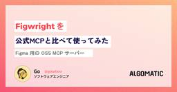
Figwright（Figma用のOSS MCP）を、公式MCPと比べて使ってみた Algomatic Tech Blog
こんにちは。AlgomaticでソフトウェアエンジニアをしているGo（@53able）です。 Figma のデザインをエージェントに読ませたり、逆に Figma 上で画面を組ませたりするとき、まず思いつくのは Figma 公式の MCP サーバーだと思います。最近、Figwright という OSS の MCP サーバーを見つけて、公式とどう違うのか気になったので、ドキュメントを読み比べて、実際に動かしてみました。 github.com まだ使い始めたばかりなので、分かっていないところもあります。分かったことと、分からなかったことを分けて書いていきます。 2026年11月25日時点の情報です。…
1日前

Whisperの注意ヘッドを1個だけいじって、日本語の聞き取りが崩れないか120文で確かめてみた Zennの「機械学習」のフィード
音声認識モデルのWhisperには、音声にない文章を出力してしまう癖があります。無音や雑音の区間に、それらしい一文が出てくる現象です。 これを追加学習なしで、重みを少し書き換えるだけで抑えられないか。手元でそんな実験をしていて、その途中で日本語の聞き取りへの影響を確かめました。この記事はその検証記録です。 先に結論を書いておきます。 Whisper smallのデコーダで、注意ヘッドを1個だけ弱める編集を3通り試した 日本語の合成音声120文で比べたところ、どの編集も編集なしより良くならなかった ただし差はごく小さく、誤りが増えた分の大半は1つの文から出ていた 効果は出ませんでしたが、重...
1日前

人が判断する場所まで決めてあるソフトウェアファクトリー。Kiro Factory Manual を読んで動かす Zennの「生成 AI」のフィード
こんにちは、AWS Japan でソリューションアーキテクトをしているいなりくです。 エージェントにプルリクエストを書かせるようになってから、レビューのほうが追いつかなくなった経験はないでしょうか。PR は大きくなり、届く間隔も短くなり、気づくと 1 日の大半を「エージェントに指示して、出てきたものを確かめる」ことに使っています。 Kiro のエージェントを作っているチームも、同じ壁にぶつかりました。その対策として、人の注意をどこにどう使うかを軸にしたソフトウェアファクトリーを作り、2026 年 11 月 25 日の Kiro ブログで紹介しています。このファクトリーは、タスクボードの項...
1日前

Claude Codeとの会話で詰まったら「ホワイトボードで整理して」と頼むようになった Zennの「生成 AI」のフィード
こんにちは、株式会社Gizumo 開発事業部の藤井です！ Claude Code との会話で考えが詰まったときは、ホワイトボード（Claude Whiteboards）を開くと話が先に進みます。この1週間、私は詰まるたびに「ホワイトボードで整理して」と頼むようになりました。 きっかけは、業務システムの開発でよく起きる場面です。相手が思い描いている業務の流れと、実装されている流れが噛み合わず、話を聞いてもソースコードを読んでも、どこが食い違っているのかを言葉にできないことがあります。 この記事では、ホワイトボードを使った場面、そこから分かったこと、使うときのコツ、向いていなかった場面を紹介...
1日前
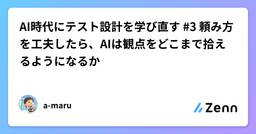
AI時代にテスト設計を学び直す #3 頼み方を工夫したら、AIは観点をどこまで拾えるようになるか Zennの「生成 AI」のフィード
前回（AI時代にテスト設計を学び直す #2 AIが書いたテストは、観点をどこまで拾えるか）は、AIにテストを書かせたら236件がほぼすべて通ったのに、17観点のうち完全に拾えたのは2つだけ（優先度が高い観点は0/7）という結果でした。その結果から、人の仕事として残るものの1つ目に「何を確かめるべきかを細かく指示する」を挙げました。 今回は、前回の文面を before とし、頼み方だけを工夫した文面（after）でAIにテストを書かせて、同じ観点表・同じルールで採点しました。 結果を先に書くと、次のとおりでした。 ただし、17観点のうち10は変わりませんでした。この記事では、細かく指示して...
1日前

データとAIで、金融業界の「次の当たり前」をつくる。 ツール導入で終わらせず、データの設計から業務フローの変革まで踏み込む、金融事業部の挑戦。  Platinum Data Blog by BrainPad ブレインパッド
Platinum Data Blog by BrainPad ブレインパッド
ブレインパッドは2026年7月、プロフェッショナルサービス事業を「業界ごとの事業部制」へ移行しました。 本シリーズでは4事業部の各責任者に、各事業部が目指すものと、そこで得られるキャリアについて話を聞いていきます。 第1弾は金融事業部。責任者、およびデータサイエンティストとして活躍する中道さんに、事業の現在地と、この事業部だからこそ得られる経験を聞きました。 話し手プロフィール 中道 亮介（なかみち りょうすけ）｜金融事業部 責任者 2012年大手SIerに入社後、金融機関向けシステム開発に従事。2020年に株式会社ブレインパッドへ入社し、金融SEからデータサイエンティストへキャリアチェンジ。…
1日前
BigQuery でレビュー分析：AI.CLASSIFY で感情、AI.GENERATE でキーワード配列を SQL だけで取り出す Google Cloud Japanのフィード
BigQuery では、レビューの感情分析は AI.CLASSIFY、満足度の数値化は AI.SCORE、キーワード抽出は AI.GENERATE に output_schema => 'keywords ARRAY' を付けて、SQL 1 本で実行できます。リモートモデルの作成も、JSON の分解も不要です。接続（Connection）を作らずに、自分のアカウントの権限だけで試せます。 最終検証日: 2026-11-25 対象: BigQuery（GoogleSQL）。AI.GENERATE の既定モデルは gemini-3.5-flash-lite この記事の SQL...
1日前

線画着色の評価を「毎回同じヒント」で: pip install hintauc ではじめる Hint-AUC Zennの「ディープラーニング」のフィード
線画着色（line art colorization）の論文を読んでいると、「ユーザーが置いた色ヒント」をランダムに作って評価している例がよくあります。ランダムなので、同じモデルでも実行するたびにスコアが変わります。 そこで、イラストの領域からヒントを決定的に作る（DHT） ことと、ヒントの量を 0 % から 100 % まで変えたときのスコアを曲線の面積でまとめる（Hint-AUC） ことを提案しました。IEEE TVCG 2026 に採録された論文です。評価用のライブラリを pip で入れられるようにしたので、使い方を簡単に紹介します。 上: 決定的に作ったスクリブルのヒント（ヒント...
1日前
線画着色の評価を「毎回同じヒント」で: pip install hintauc ではじめる Hint-AUC Zennの「機械学習」のフィード
線画着色（line art colorization）の論文を読んでいると、「ユーザーが置いた色ヒント」をランダムに作って評価している例がよくあります。ランダムなので、同じモデルでも実行するたびにスコアが変わります。 そこで、イラストの領域からヒントを決定的に作る（DHT） ことと、ヒントの量を 0 % から 100 % まで変えたときのスコアを曲線の面積でまとめる（Hint-AUC） ことを提案しました。IEEE TVCG 2026 に採録された論文です。評価用のライブラリを pip で入れられるようにしたので、使い方を簡単に紹介します。 上: 決定的に作ったスクリブルのヒント（ヒント...
1日前
スマートグラス規制が海外で拡大 豪2州が学校で全面禁止、ノルウェーは公共の場での一時禁止を法案化へ 1 テクノエッジ TechnoEdge
カメラ付きスマートグラスの使用や販売を制限する動きが海外で相次いでいます。豪州の2州は学校での着用を禁止し、ノルウェー政府は公共の場での一時禁止を表明、オランダでは3団体がMetaを相手取り販売停止などを求める仮処分を申し立てました。
1日前

アリババのカード型AIレコーダー QwenNote A1発売 日本語音声100万時間超で最適化、データは国内で処理。他社AIとMCP連携も対応 テクノエッジ TechnoEdge
アリババがカード型のAIボイスレコーダー「QwenNote A1」を日本で発売しました。
1日前

3000を超える『GTA6』PC移植プロジェクト、Githubから削除。AIツールが非公式開発の大量発生を助長？ 2 テクノエッジ TechnoEdge
人気ゲーム『GTA6』開発元のRockstar Gamesを傘下に持つTake-Two Interactiveは、同作の非公式PC移植プロジェクトへの対策に乗り出しています。
1日前

ブラックフライデーとAI：Adobeを解約しようとしたら、年額8万円が3万5000円になった話 1 テクノエッジ TechnoEdge
ブラックフライデーでIllustrator解約を試みたが、プラン変更で返金を含む総支出を抑え、月額3278円で1年間様子を見る作戦に成功
1日前
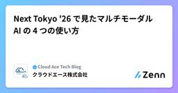
Next Tokyo '26 で見たマルチモーダル AI の 4 つの使い方 Zennの「生成 AI」のフィード
こんにちは、クラウドエース株式会社 第一開発部の遠藤です。 Google Cloud Next Tokyo '26 では、基調講演をはじめ多数のセッションでマルチモーダル AI が話題になりました。Veo や Nano Banana といった生成モデルの名前は、すでに多くの場所で紹介されています。 本稿はモデルや製品の解説ではなく、マルチモーダル AI が制作パイプラインのどの工程に入るか という視点で、現地参加時のメモを整理した考察記事です。画像・映像・音声の「生成」だけでなく、「理解」「編集」「シミュレーション」まで含めて、Google のマルチモーダル AI が強いと感じた理由を書...
1日前
検証から本番へ ― Google Cloud Next Tokyo '26 を振り返る Zennの「生成 AI」のフィード
こんにちは、クラウドエース株式会社 第一開発部の遠藤です。 2026 年 7 月 30 日〜 31 日に東京ビッグサイトで開催された Google Cloud Next Tokyo '26 に 2 日間参加しました。 開催直後の速報記事は、すでに多くの方が公開されています。本稿では発表内容の網羅ではなく、2 日間の基調講演から読み取れる Google Cloud の進化の方向性 を整理します。特に、AI エージェント活用の本番フェーズへの移行像を中心に書きます。Day 1 夜に開催された Dev Night については、別記事「Next Tokyo '26 Dev Night で見えたエ...
1日前

評価基準と現場の慣習が食い違うとき、注記を足すとLLM判定器はどう変わるか ― 999件と未見の300件で確かめた Zennの「生成 AI」のフィード
LLMに会話の品質を採点させるとき、評価基準の字面と現場の慣習が食い違うことがあります。たとえば「名前を呼ぶならファーストネームで」という基準は、日本で正しいとされる「名字＋様」とぶつかります。 このような食い違いがある箇所に、評価基準を変えずに「地域慣習の注記」を3行だけ足しました。その結果をClaudeの4モデル（Haiku 5.5・Sonnet 5.5・Opus 5.5・Fable 5.2）で測っています。 食い違いは、注記でほぼ解消できた。 名字＋様の減点率は、注記を書くときに見たデータ（999件）で 93〜100% → 0〜2%、注記を書いた後に用意した別のデータ（300件）で...
1日前
評価基準と現場の慣習が食い違うとき、注記を足すとLLM判定器はどう変わるか ― 999件と未見の300件で確かめた Zennの「機械学習」のフィード
LLMに会話の品質を採点させるとき、評価基準の字面と現場の慣習が食い違うことがあります。たとえば「名前を呼ぶならファーストネームで」という基準は、日本で正しいとされる「名字＋様」とぶつかります。 このような食い違いがある箇所に、評価基準を変えずに「地域慣習の注記」を3行だけ足しました。その結果をClaudeの4モデル（Haiku 5.5・Sonnet 5.5・Opus 5.5・Fable 5.2）で測っています。 食い違いは、注記でほぼ解消できた。 名字＋様の減点率は、注記を書くときに見たデータ（999件）で 93〜100% → 0〜2%、注記を書いた後に用意した別のデータ（300件）で...
1日前

AIリスク監査の実施、わずか5.7％ 内部監査が追い付かない「もう一つのリスク」とは？ 1ITmedia AI＋ 最新記事一覧
ある調査によると、今後重要性が高まるリスクとして「AI・生成AI」を挙げた回答は半数を超えた。一方、AIのリスクに関する内部監査を「すでに実施」を選んだ回答者は5.7％にとどまる。同調査からは、内部監査が追い切れていない、AI以外の領域も浮かび上がった。
1日前

【フィジカルAI解説】Egocentricとは？エゴセントリックデータの集め方について解説 Zennの「機械学習」のフィード
フィジカルAIの研究開発で使う学習データは、「フィジカルAIデータピラミッド」として整理できます。土台となるのは、3D仮想環境で物体の位置や作業条件を変えて生成するシミュレーションデータ（合成データ）です。その上に、人が実際に作業する様子を記録した一人称視点データ、人が小型グリッパーを手に持って物のつかみ方や動かし方を実演したUMIデータ、そして人がロボットを遠隔操作して収集した実機のテレオペレーションデータが続きます。 本記事では、その中でも人の作業を一人称視点で捉えるエゴセントリックデータに着目し、モデル学習での役割と、収集を始める前に整理しておきたいポイントを解説します。 Egoc...
1日前
Knowledge Studio で始める「手書きゼロ」のコンテキストエンジニアリング ─ Data & AI Summit '26 Fal Google Cloud Japanのフィード
2026年11月18日に開催された Google Cloud Data & AI Summit '26 Fall にて、『データ移行なしで AI へ繋ぐ「SOAP」アーキテクチャ ─ オントロジーによるコンテキスト最適化とトークン消費の抑制』というテーマで登壇しました。 当日のセッションアーカイブ動画が YouTube で公開されています。 🎬 セッションアーカイブ動画: データ移行なしで AI へ繋ぐ「SOAP」アーキテクチャ（YouTube） 本記事ではセッションのエッセンスを絞り、AI エージェント実用化の鍵を握る コンテキストエンジニアリング と、それを驚くほど簡単にする Kno...
1日前
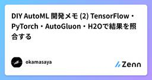
DIY AutoML 開発メモ (2) TensorFlow・PyTorch・AutoGluon・H2Oで結果を照合する Zennの「機械学習」のフィード
前回は、CSVの点検から分類モデルを選び、取り置いたデータで最後に評価するところまでを紹介しました。今回は、その結果を別のライブラリでも確かめてみます。題材はIrisとWineです。 TensorFlowとPyTorchには、同じ構成のニューラルネットワークを渡して、予測ラベルと確率を比べました。AutoGluonでは、選んだモデルをDIY AutoMLと同じ保留テスト行・評価指標で照合しました。H2O AutoMLでの照合は追加検証として掲載します。 WindowsのCPUとPython 3.13.17で、TensorFlow 2.20.0とPyTorch 2.14.0のCPU版を使い...
1日前

電通が「Geminiを使いこなすFDE」ら3000人育成プログラムを開始 その内容とは？ 1ITmedia AI＋ 最新記事一覧
生成AIを導入しても、現場の業務に生かせないと成果にはつながらない。電通は約3000人を対象に、「Gemini Enterprise」を使いこなし、現場での生成AI活用を推進できる人材の育成を始めた。人材をどう育てるのか。
1日前

複数人のAIエージェントの作業ログを集めて、だれでも使える業務スキルにした話 Zennの「生成 AI」のフィード
AI エージェントと一緒に仕事をしていると、会話のなかに「こうすると失敗する」「この順番だとうまくいく」というノウハウがどんどんたまっていきます。ただ、それは各自の PC のセッションログに埋もれたままで、ほかの人は使えません。 ある業務を複数人がそれぞれ AI エージェントと進めていたので、そのやり取りを集めて、だれでも同じ業務をAI エージェントと進められる「業務スキル」 にまとめることにしました。 対象読者： AI エージェントとの作業ノウハウを、チームで共有したい方 「スキル」や「手順書」をAI エージェントに読ませて仕事をしている(またはこれから始めたい)方 最初の状態はこうで...
1日前

生成AIグラビアをグラビアカメラマンが作るとどうなる？第79回：MiniMax H3から派生したP-H3-ImageとMiniMax-H3-Imageはどう違う？（西川和久） 1 テクノエッジ TechnoEdge
今回は同じMiniMax H3からの派生と言うことで、どう違うのか？ 作例多めにしてご紹介しよう。
1日前
Xが13～17歳向け「ペアレンタルコントロール」を提供開始 子供の同意必要、DMの中身も確認不可 1 テクノエッジ TechnoEdge
Xは11月26日、13～17歳のユーザーを対象とした「ペアレンタルコントロール」の提供を始めました。保護者は利用時間やおすすめ、フォロワー、DMの受信相手を管理できますが、メッセージの中身や検索履歴は見られません。
1日前
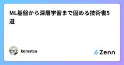
ML基盤から深層学習まで固める技術書5選 Zennの「ディープラーニング」のフィード
去年の秋頃、LLMを使ったプロダクト開発に本格的に関わるようになった。プロンプトエンジニアリングやRAGの実装はなんとかこなせるものの、モデルの挙動が想定外になったとき「なぜそうなるのか」を説明できない自分に気づいた。APIの向こう側がブラックボックスのままだと、トラブルシュートで手が止まる。 そこで基礎を固め直そうと技術書を何冊か読み始めたが、途中で挫折する本が続いた。分厚い教科書を1ページ目から律儀に読む方法がそもそも自分に合っていない。結局、必要な箇所を絞り込み、手を動かしながら読む形に切り替えてから、ようやく知識が定着し始めた。 この記事では、自分がML・ディープラーニングの基盤...
1日前
ML基盤から深層学習まで固める技術書5選 Zennの「機械学習」のフィード
去年の秋頃、LLMを使ったプロダクト開発に本格的に関わるようになった。プロンプトエンジニアリングやRAGの実装はなんとかこなせるものの、モデルの挙動が想定外になったとき「なぜそうなるのか」を説明できない自分に気づいた。APIの向こう側がブラックボックスのままだと、トラブルシュートで手が止まる。 そこで基礎を固め直そうと技術書を何冊か読み始めたが、途中で挫折する本が続いた。分厚い教科書を1ページ目から律儀に読む方法がそもそも自分に合っていない。結局、必要な箇所を絞り込み、手を動かしながら読む形に切り替えてから、ようやく知識が定着し始めた。 この記事では、自分がML・ディープラーニングの基盤...
1日前

Cloud Run worker poolsのCPU自動スケーリングを解説 G-gen Tech Blog
Cloud Run worker pools の CPU 自動スケーリング機能について解説します。基本概念から設定手順、Pub/Sub を用いた実際の動作確認まで詳しく紹介します。
1日前
サイバー攻撃への悪用をFBIが警告した「ARTEX」の英語フォーク版、Apple開発のリアルタイム動画生成AI「FastFrames」など生成AI技術5つを解説（生成AIウィークリー） 3 テクノエッジ TechnoEdge
今回の「生成AIウィークリー」（第169回）は、元OpenAI CTOが率いるThinking Machines LabによるノートPCで動くAIモデル「Inkling 2 Mini」や、Apple開発のリアルタイム動画生成AI「FastFrames」を取り上げます。
1日前

AIエージェントの行動が「適切か暴走か」をどう見極める？ Googleが明かすテストの盲点 2ITmedia AI＋ 最新記事一覧
AIエージェントが期待通りに動作するかどうかを、どのように検証すればよいのか。GoogleはAIコーディングエージェント向けのプラグイン開発を通じて、最終回答に基づく評価や、実際に操作させるテストだけでは見抜けない問題があることを明らかにした。
1日前

「コスト削減」の“次”の成果、どう設定する？ ビジネス変革に結び付けるための「期待の中身」 1ITmedia AI＋ 最新記事一覧
ITRの調査によると、AI導入時に期待する効果として上位に並ぶのは「業務コストの削減」や「業務時間の短縮」でした。AIをビジネス変革の切り札とする企業は、AIの成果を問う前に、何を期待するかから見直す必要があると筆者は提言します。
1日前


RTX 3060 1枚・誤差逆伝播なしでゼロから日本語モデルを育てた「ENNE」の設計と限界 Zennの「機械学習」のフィード
現在の言語モデルは、巨大な1つのネットワークを大規模なGPUクラスタで一括学習して完成させる前提で設計されている。本体の重みへ知識を追加したり振る舞いを直したりする場合、再学習や重い調整がつきまとう。 これに対して、知能を「一度学習して完成させる巨大な塊」ではなく、**「設計し、育て、後から部品を足していくシステム」**として作れないかと考えたのが ENNE（Engineering Neural Network Engine） である。 日本語を対象に、個人のGPU（RTX 3060 12GB）1枚でv0.1から開発を続けている。大きな特徴は次の3点だ。 ゼロから家庭用GPU 1枚で育て...
1日前

「Attention Is All You Need」は機械翻訳の論文だった——Transformer誕生の要点を読み直す Zennの「機械学習」のフィード
ChatGPT をはじめとする生成AIの基盤、Transformer。その出発点である論文「Attention Is All You Need」（2017年）は、実はチャットAIの論文ではなく、機械翻訳の論文でした。 この記事は、note で連載した『必要なのは、Attentionだけだった』の第1部を、技術者向けに要約し直したものです。論文が何を問題にし、何を捨て、何を残したのか——要点だけをたどります。 2017年6月12日、arXiv に投稿。著者は Ashish Vaswani、Noam Shazeer、Jakob Uszkoreit、Illia Polosukhin ら8人 同...
1日前

LightGBM で全9万回の国会会議を学習させたら ROC-AUC 0.818 で「荒れる会議」を予測できた話 Zennの「機械学習」のフィード
国会議事録の会議単位データ（mart_meetings_ml.parquet）をベースに、以下のように目的変数と特徴量を設計しました。 目的変数（is_turmoil）: 会議内のト書きに「ヤジ」「騒然」「聴取不能」「休憩」などの議場混乱シグナルが含まれるか（1 / 0） 主な特徴量: 総理・大臣への言及率 発言文字数の標準偏差（バラつき） 1日の発言回数・平均文字数 特定キーワード（「検討」「善処」など）の出現率 開催年・委員会種別 学習済みモデルの寄与度（Feature Importance）を上位から並べると、非常に興味深い結果になりました。 総理・大臣への言及率（1,149） 発...
1日前

アマダと日立、AIエージェントのPoCで効果確認 フィジカルAIの現場実装へ  ITmedia AI＋ 最新記事一覧
ITmedia AI＋ 最新記事一覧
アマダと日立製作所は、AIエージェントとフィジカルAIの実装により、アマダのユーザー工場の自律化とアマダの保守サービスのさらなる高度化に向けた協創を加速する。
1日前

【scikit-learn入門 #9】クラスタリング ─ KMeans（教師なし学習） Zennの「機械学習」のフィード
本記事は「Pythonで機械学習を行うscikit-learn入門」シリーズの第9回です． 第8回までは，「正解」を与えて学習する 教師あり学習（回帰・分類）を扱ってきました． 第9回からは，「正解」のないデータから構造を見つける「教師なし学習」 に入ります． その代表が，データを似た者どうしにグループ分けする クラスタリング です． 「正解がないのに学習できるの？」という新鮮な驚きを，ぜひ体験してください． 私のscikit-learnライブラリのバージョンは "1.5.2" です． シリーズ構成予定（全11記事） インストール 〜 機械学習の全体像（fit / predict） デー...
1日前

AIで人気YouTuber「N3on」の声を複製、26万ドル相当をだまし取った詐欺師に約4年の実刑判決 1 テクノエッジ TechnoEdge
フロリダ州在住のデヴィッド・アンソニー・サンチェスは、AIを使って人気YouTuberの声を複製し、暗号資産約26万ドル相当を詐取したとして、47か月の実刑判決を言い渡されました。
1日前
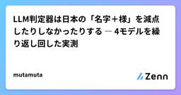
LLM判定器は日本の「名字＋様」を減点したりしなかったりする ― 4モデルを繰り返し回した実測 Zennの「機械学習」のフィード
架空の日本語サポート会話50件を、4つのLLM（Claude・Gemini・DeepSeek・Qwen）に品質監査させ、新しい会話で同じ指示文を原則3回ずつ流しました（Qwenは時間がかかるため1〜2回）。 同じ指示文でも、「名字＋様」を基準1どおりに減点する回と、現場の判定に寄せて減点しない回がある。 Geminiは3回中2回、DeepSeekは3回中1回、Qwenは2回とも、名字＋様で呼んだ7件をすべて減点しました。Claudeは3回とも減点しませんでした。 全モデルが共通して誤減点したのは「社内手順書にない一般的な手順」。 再起動やキャッシュ削除を「手順書違反」と判定するミスは、補...
2日前

無料AI売上予測ツールを作成：実店舗1,521日＋RossmannでExcel関数・LightGBM・Chronosを比較 Zennの「機械学習」のフィード
飲食店・小売店・ECサイトの現場で「来週・来月の売上や需要を予測したい」というニーズは常にありますが、実務の現場は極端に二極化しています。 Excelの移動平均や FORECAST.ETS で手作業する（祝日や曜日周期のズレ、外れ値で簡単に破綻する） 月額数万円〜数十万円の需要予測SaaSを導入する（中小企業・個人店舗にはコストも稟議も重すぎる） そこで、「手元のPOSレジやECのCSV・Excelをドラッグ＆ドロップするだけで、登録不要・無料でAI売上予測と安全在庫計算ができるWebアプリ」 として SalesCast を個人開発しました。 ただ、「AIで高精度に予測できます！」と言う...
2日前

4 億レコードのテーブルの ANALYZE で、n_distinct が過少に推定された理由についての考察 1 フューチャー技術ブログ
フューチャー技術ブログ
4 億レコードの childs テーブルで、ANALYZE が推定した n_distinct が真の値の約 1/230 まで小さくなった理由を、PostgreSQL の推定式・2 段階のサンプリング方法・本番データのページ内の並びを突き合わせて考察します。
2日前
11/26 (木)

辞書を使わずに青空文庫の文章を文節に区切る機械学習モデル（線形の点予測で F1 0.988） Zennの「機械学習」のフィード
青空速読 RSVPリーダーは、青空文庫の作品を RSVP で読む iOS アプリです。 RSVP（Rapid Serial Visual Presentation）は、文章を短い語句に区切り、画面の同じ位置にひとつずつ表示する読み方です。行を目で追う必要がないので、視線を動かさずに、スマホの小さな画面でも速く読み進められます。フラッシュのように次々と現れる言葉を追うだけなので、通勤や待ち時間のような短い時間でも、名作を少しずつ読み進められます。 青空速読 RSVPリーダーは、文章を文節ほどの長さに区切り、画面の中央にひとつずつ表示します。この読み方では、語の途中で切れると、読み手は次の表...
2日前

量子機械学習の初期レビューから見える世界 Zennの「機械学習」のフィード
手書きの数字を見分けたり、見たことのない手書き数字の画像を作ったりするには、データの中にあるパターンを学ぶ必要があります。これが機械学習です。では、その学習の一部を量子コンピュータに任せると、何が変わるのでしょうか。 Jacob Biamonteらの『Quantum Machine Learning』は、この問いをさまざまな角度から整理しています。この記事では、量子に期待される利点を「計算を速くする」「複雑な分布からサンプルを得る」「量子の状態を直接調べる」の3つに分けて紹介します。Biamonteらのレビュー（Nature、2017年） · たとえば、手書きの「3」と「8」を見分ける機...
2日前

PyTorchと量子アニーリング(D-Wave Quantum)の連携 Zennの「機械学習」のフィード
量子アニーリングは、量子ゆらぎ組合せ最適化において最適解を探索する手法[1]として知られていますが、近年では機械学習で必要なサンプルを高速に得るためのサンプラーとしての研究[2]も行われています。 そうした潮流の中で、昨年8月に量子アニーリングマシンを提供するD-Wave Quantum Inc.は、同社の量子アニーリングマシンをPyTorchから利用するためのオープンソースツールキットを発表しました。ツールキットは同社のOceanソフトウェア群の一部で、MNISTの手書き数字を生成するデモも同時に公開されています。D-Waveの公式発表 このデモでは、PyTorchで構築したニューラル...
2日前

NothingもAIレコーダー兼用イヤホン Ear (note) 予告、エージェントの文脈を補う「ハードウェア・コンテキスト・レイヤー」 テクノエッジ TechnoEdge
Nothingが、「AIネイティブ」をうたう録音機能付きワイヤレスイヤホン「Ear (note)」を予告しました。
2日前
「Gemini 4 Neon」が実際の標高データからスキーシミュレーターを開発――Google公式が勧める利用例まとめ 2ITmedia AI＋ 最新記事一覧
Googleが新発表したAIモデル「Gemini 4 Neon」について、公式ブログで披露されたデモや日常での活用場面をまとめて紹介する。
2日前

Obsidian公式の「エージェント向け」スキル集が登場 Vault操作法とファイル形式をひとまとめに 53ITmedia AI＋ 最新記事一覧
マークダウンエディタ「Obsidian」に「エージェント向けの公式コネクタ」機能が登場した。
2日前

自動運転の予測軌跡の可視化動画を誰でも高速に作れるようにする 1 Tech Blog - Turingのフィード
MLOps チーム の @stu3dio_graph です。 チューリングでは，自動運転モデルが予測した軌跡を，車幅の半透明の帯として走行映像に重ねた動画を作っています。モデル開発での介入の振り返りや，広報・事業開発による社外への発信に使われています。 この動画は，もともと CTO の山口さんが書いたスクリプトで作るものでした。手元でスクリプトを順番に実行しなければならず，AWS の認証情報と GPU のある環境も必要でした。 このたび，このスクリプトを AWS Step Functions と AWS Batch に載せ，社内の走行データビューアからリクエストすると Slack に動画...
2日前
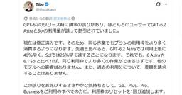
GPT-6.2の使用量「誤って割引されていた」 修正後はAstraで上限に40％早く達する見込み 2ITmedia AI＋ 最新記事一覧
OpenAIのプロダクト責任者ティボー・ソティオ氏（通称Tibo）は「GPT-6.2 Astra」と「GPT-6.2 Sol」の使用量の計算に誤りがあり、実際よりも少なく計算されていたとXで明かした。
2日前

公開サイトやVPN装置に「外から入れるか」をAIで検証、OpenAIの技術でSB OAI Japanが診断サービス テクノエッジ TechnoEdge
ソフトバンクとOpenAIの合弁会社SB OAI Japanは11月25日、企業が外部に公開するシステムへ実際に侵入を試みる「侵入可否診断」の提供を開始しました。OpenAIの技術で侵入経路を検討し、10営業日以内に結果と対策案を報告します。料金は公表していません。
2日前
AIに「過去のある時点のウェブ」だけを見せる検索API、Perplexityが公開 答えを知らない状態で予測力を測定 テクノエッジ TechnoEdge
Perplexityは11月25日、開発者向けの検索APIに、指定した日時より前のウェブだけをAIに見せる「Time Machine」を追加しました。結果が出た後の情報を遮断し、AIエージェントの予測力や調査力を公正に測定できます。遡れるのは最大365日で、追加料金は不要です。
2日前

音声を音声のまま訳す同時通訳AI、DeepLが新モデル「Aure v2」で遅延を半減 2 テクノエッジ TechnoEdge
DeepLが音声翻訳モデル「Aure v2」の提供を開始しました。音声を文字に起こさず直接別の言語の音声に訳す構成を採用し、訳し始めるまでの遅延を前モデル比で50%削減しました。
2日前
飲食店の“AI商品画像”は景品表示法違反にならないの？ 弁護士の見解 40ITmedia AI＋ 最新記事一覧
飲食店のメニューにAIで生成した画像を使用した場合を例に、生成AIによる商品画像と景品表示法の関係について考える。
2日前

米ニューヨーク州、AIチャットボット搭載おもちゃを5年間禁止 4 テクノエッジ TechnoEdge
ニューヨーク州知事が、AIチャットボット搭載おもちゃの製造・流通・販売を州内で5年間禁じる法律に署名しました。2027年2月22日に施行し、違反には1日最大1万5000ドルの制裁金を科します。
2日前

家計データをなぜ「Muse」「ChatGPT」に渡すのか？ マネーフォワードに聞いた狙いと安全策 3ITmedia AI＋ 最新記事一覧
頼んでもいないのに、AIが朝一番にカードの引き落としと預金を照らし合わせて知らせてくる。家計簿アプリ「マネーフォワード ME」のデータがMetaのMuseに届くようになったからだ。だが家計の記録は、マネーフォワードにとって最大の資産のはず。なぜ外のAIに差し出したのか。安全は誰が守るのか。
2日前
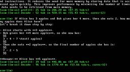
24KBの「LLM専用OS」が登場 全てアセンブリでLinuxを排し、llama.cppより最大54%高速 136 テクノエッジ TechnoEdge
言語モデル「Qwen3-0.6B」を動かすためだけのOSが登場しました。全編アセンブリ製で本体は約24KB、Linuxを使わず0.1秒未満で起動します。作者の計測ではllama.cppより最大54%高速です。
2日前
BQMLのTRANSFORM句がTraining-Serving Skewを解決してくれる話 Zennの「機械学習」のフィード
機械学習モデルを本番運用したことがある人なら、一度はTraining-Serving Skew(学習と推論のズレ)問題を踏んでいると思います。 学習時に施した前処理と、推論時に施す前処理が微妙にズレていて、オフライン評価では好成績だったモデルが本番で使い物にならないという、MLOpsの古典的な事故です。 BigQuery ML(BQML)には、この問題をSQLレベルで解決できる TRANSFORM 句という仕組みがあります。地味な機能ですが、前処理をモデルに含めてしまう運用が便利なので紹介します。 一般的に、機械学習パイプラインを作ると、前処理のコードは2箇所に存在することになります。 ...
2日前


「Claude Duet」日本でも開始 AnthropicのAIエージェント、研究プレビューを米国外に拡大 2ITmedia AI＋ 最新記事一覧
前にウェイトリストに登録していた「Pro」「Max」「Ultra」ユーザー向けに招待が届き始めており、「招待が来た」と報告する日本のユーザーが相次いでいる。
2日前
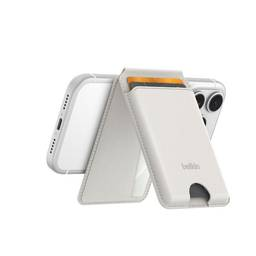
ベルキンから紛失防止トラッカー内蔵MagSafeウォレット、Apple「探す」とAndroid「Find Hub」両対応で6991円 テクノエッジ TechnoEdge
ベルキンが、Appleの「探す (Find My)」とGoogle「Find Hub」に対応するトラッカー内蔵MagSafeウォレットスタンド「SureFind 紛失防止機能付きウォレットスタンド」を発売しました。
2日前

脆弱性の発見数、1年で2倍超 Microsoft製品も月100件から1000件超に……AIで一変 36ITmedia AI＋ 最新記事一覧
米Microsoftが毎月公開しているWindowsのセキュリティ更新プログラム。11月は1000件以上の脆弱性が修正された。他社の製品も含めると、2026年に入って発見された脆弱性は10万件を超え、すでに25年の倍以上だ。AIの進化に伴い脆弱性の発見とそれを悪用した攻撃が激増する中で、パッチを適用する側はどう対処すればいいのか。
2日前

Character.AIのチャット履歴競売に41州とワシントンD.C.が異議 未成年者の約210万アカウント分も対象 20ITmedia AI＋ 最新記事一覧
米カリフォルニアやコネチカットなど41州とワシントンD.C.の司法長官は、破産申請した「Character.AI」の資産競売に異議を申し立てた。競売には未成年者の210万以上を含む2100万超のチャット履歴が含まれるが、買い手にデータ保護の義務がなく、プライバシー法に反するとして売却の却下を求めている。
2日前

旅行会社に残る価値は？ 生成AIに「旅の相談」が当たり前の今、業界の生存戦略 18ITmedia AI＋ 最新記事一覧
検索から予約、決済まで自律的にこなす「AIエージェント」の普及で、旅行会社の存在意義が問われている。日本旅行業協会（JATA）主催のシンポジウムに旅行・食・IT・大手旅行会社のプロ4人が登壇。「おいしい」を味わう感覚や、顧客の言葉の裏にある本音までは読み取れないAIの限界を指摘し、AIによる業務効率化で生み出した時間を「信頼関係」や現場の感動体験に振り向ける共創の生存戦略を議論した。
2日前

GitHubに「人には見えない隠し文字」 小型AIの操作狙うものも……1億4500万件を調査 25ITmedia AI＋ 最新記事一覧
イスラエルのセキュリティ会社Radwareとテクニオン・イスラエル工科大学に所属する研究者らが発表した論文「Who Is Prompt-Injecting Coding Agents? An Empirical Study of Hidden AI-Directed Text on GitHub」は、GitHub上に潜むAI向けの隠しテキストが、誰によってどのような目的で埋め込まれているのかを分析した研究報告だ。
2日前

通話中の詐欺をAIが検知、離れた家族にも通知 BBSSが電話アプリ「みやブルフォン」を月額880円で提供
1 テクノエッジ TechnoEdge
ソフトバンク系のBBSSが、通話内容をAIで分析して特殊詐欺の兆候を検知するアプリ「みやブルフォン」の提供を始めました。本人に加えて家族にも通知する点が特徴で、料金は1人あたり月額880円です。
2日前

1Passwordに不正アクセス、一部顧客の氏名とメールアドレスが流出 保存したパスワードと暗号鍵は影響なし 3 テクノエッジ TechnoEdge
1Passwordは、攻撃者が従業員のGitHubアカウント経由で社内システムへ侵入し、一部顧客の氏名とメールアドレスを持ち出したと公表しました。利用者が保存したパスワードなどのデータと暗号鍵は影響を受けておらず、利用者側の設定変更は不要です。
2日前

AnthropicのアモデイCEO、「人間の自由意志をAIに明け渡す」考えを否定 AI企業間で議論 15ITmedia AI＋ 最新記事一覧
Anthropicのダリオ・アモデイCEOは、超知能AIに人間の意思決定権を委ねるべきだと考えているとしたAxiosの報道をXで否定した。社会の統治と個別タスクの自動化を混同していると反論し、AIは民主的プロセスで管理されるべきだと強調した。超知能時代の主導権を巡っては、OpenAIやMeta幹部も発言しており議論が広がっている。
2日前

nginx proxy_pass がDNS変更に追従しない仕組みをソースコードから読む 1 エムスリーテックブログ
こんにちは。 Unit3 / Unit4を兼務している金澤です。 Unit3では、主に医学書の電子書籍サービスや、医師の開業サポートなどのサービスを担当しています。 今回は Unit3 テックブログリレー 3 日目の記事です。 「nginx で proxy_pass にホスト名を直接書くとDNS変更に追従しない、追従させたければ変数経由で書く」という TIPS は有名で、私も実運用で何度か使ってきました。ただ、「なぜ変数化するだけで挙動が変わるのか」については長年ぼんやりとしか理解していませんでした。 今回この機会に、nginx のソースコードまで降りて挙動の仕組みを読み解きました。本記事では…
2日前
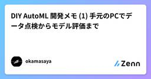
DIY AutoML 開発メモ (1) 手元のPCでデータ点検からモデル評価まで Zennの「機械学習」のフィード
モデルをいくつか動かすと、どれが一番高い点数だったかは分かります。その点数をあとから読み直すには、どんなデータを使い、どこで候補を選び、何を最後に評価したのかも一緒に残しておきたい。そう考えて、DIY AutoMLでは学習前の点検から結果の保存までを一つの流れにしました。 DIY AutoMLを作り始めた理由 この開発メモでは、手元のWindows PCでIrisのCSVを点検し、5つの分類モデルを比較して結果を読むところまでたどります。 検証に使ったのは、メモリ16 GBのWindows PCです。Python 3.13.17の仮想環境（.venv）で、表の読み込みにpandas、分類...
2日前

Programmatic Video 入門 - Claude Code・Codexによる動画制作の仕組み npaka
Claude Code・Codexによる動画制作の仕組みについてまとめました。続きをみる
2日前
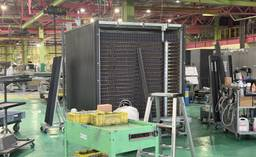
図面を探す時間から技能を伝える時間へ、AI活用で業務効率化を進める空研工業 2 ITmedia AI＋ 最新記事一覧
創業70周年を迎えた空研工業は、長年蓄積してきた図面や技術資料をAIで活用する「AIナレッジ基盤システム」をRecursiveと共同開発した。試行利用の結果を基にした試算では、図面検索工数を最大約90％削減する見通しで、業務効率化の先には技能伝承も見据える。AI活用に至った背景や現場が抱えていた課題、試行利用で得られた手応えについて、工場長と現場の技術者に話を聞いた。
2日前

Cloud Runで静的サイトをDockerfileなしで配信するStaticランタイムを解説 G-gen Tech Blog
Cloud RunのStaticランタイムを活用して、Dockerfileなしで静的サイトを簡単かつ高速にデプロイする方法を解説します。クリーンURLやSPAフォールバックなどのNginx機能や、ビルドあり/なしデプロイの違い、注意点を網羅。
2日前

SpaceXの宇宙データセンター衛星100万基、予備通信用の電波を米FCCが初の認可 16 テクノエッジ TechnoEdge
米FCCは11月25日、SpaceXが計画する宇宙データセンター衛星「Starmind」100万基の展開を条件付きで認可しました。初号機の認可期限は2033年、全基は2040年です。高度600km超の衛星の廃棄計画は判断を保留し、実現には追加の申請を要します。
2日前
国内造船業再生の鍵はフィジカルAI、デジタルシップヤード開発の現状を知る
2 ITmedia AI＋ 最新記事一覧
政府策定の「造船業再生ロードマップ」では、AIとロボット技術を組み合わせたフィジカルAIによる建造工程の自動化が求められている。「造船業界におけるAI・ロボティクス普及に向けたシンポジウム」では、ジャパン マリンユナイテッドや川崎重工業、ソフトバンクロボティクス、日立の取り組みが紹介された。
2日前
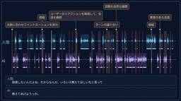
日本人の“相づちと間”を再現した会話AI「Haru-4B」を国内ベンチャーが無償公開。Sidon活用。電話で会話できる（生成AIクローズアップ） 30 テクノエッジ TechnoEdge
今回は、相手の声を聞きながら同時に話すことができる全二重（full-duplex）方式のSpeech-to-Speechモデル「Haru-4B」を取り上げます。
2日前

『GTA6』の非公式PC移植目指すプロジェクトが活発化。「脱30fps」目指す試みも テクノエッジ TechnoEdge
Rockstar Gamesが11月19日に発売した人気ゲーム『Grand Theft Auto VI（GTA6）』は、発売初日だけで3250万本を販売し、売上高は37億9000万ドル（約6000億円）に達したと言われています。
2日前
管理職の約7割が黙認するシャドーAIの現実 「相談すると禁止されそう」「承認が遅い」  ITmedia AI＋ 最新記事一覧
ITmedia AI＋ 最新記事一覧
企業が安全なAI環境を整備する一方で、現場では非公式なツールの利用がまん延している。ルールの順守よりも業務スピードを優先せざるを得ない現場のジレンマと、IT統制の限界が調査で浮き彫りになった。
2日前
11/25 (水)
指輪物語コラボのスマートリング『The One Ring』リンコンが発表。健康管理向け My Preciouss 2 テクノエッジ TechnoEdge
スマートリングのRingConnが、映画「ロード・オブ・ザ・リング」コラボの限定モデル「The One Ring」を発表しました。
3日前

ブラックフライデーでGoogle AIサブスク半額、Pro月額より年2万円お得。YouTubeプレミアムLiteやGoogle Health特典も 24 テクノエッジ TechnoEdge
Googleは、ストレージ容量とAIのサブスクGoogle AI Plus / Pro年額プランが半額になるブラックフライデーセールを実施中です。
3日前
Data & AI Summit '26 Fall 基調講演『Agent-Ready 2.0』レポート Google Cloud Japanのフィード
2026 年 11 月 18 日に開催された Data & AI Summit '26 Fall。本記事では、基調講演『Agent-Ready 2.0 ー 理論から実践、その先へ』の要点をレポートします。 半年前の Spring の基調講演（前回のレポート）では、データ基盤が「System of Insight」から「System of Action」へ変わるという方向性が示されました。今回はその続編です。AI エージェントを実際の業務に組み込むために何が必要か。Google Cloud に加え、KDDI、富士通、MBK デジタルの 3 社にご登壇いただき、それぞれの実践をもとに語られま...
3日前

ヤマト運輸の問い合わせチャットが停止中、委託先チャットプラスに不正アクセス 氏名・住所・電話番号が漏えいの可能性 9 テクノエッジ TechnoEdge
ヤマトホールディングスが、問い合わせ用チャットの委託先チャットプラスへの不正アクセスを公表しました。外国語窓口の利用者の氏名・住所・電話番号が漏えいした可能性があり、チャット4種の受付を停止しています。
3日前

北海道のドラッグストアチェーンで個人情報22万9026件が流出、委託先サイバーエージェントがクラウドに「公開設定」で配置 約1年4か月公開状態 1 テクノエッジ TechnoEdge
サツドラが公式アプリ利用者22万9026件の個人情報流出を公表しました。委託先のサイバーエージェントが開発環境のクラウドにファイルを公開設定で配置したことが原因で、第三者による取得を9回確認しています。
3日前
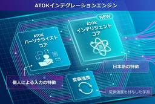
ATOKがLLMを取り入れた新変換エンジンに、2027年2月1日提供 PC内の文書から辞書を自動作成する機能も 3 テクノエッジ TechnoEdge
ジャストシステムは、LLMを取り入れた新変換エンジンを搭載するATOKを2027年2月1日に提供します。PC内の文書から辞書を自動作成する機能も加えます。ローカルLLMで文書作成を支援する「一太郎2027」も2月5日に発売します。
3日前
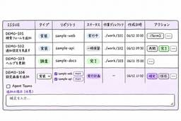
レビュー依頼で自動起動、Mac再起動時にタブ復元、完了時のクリーンアップ —— エージェント開発におけるセッション運用Tips 1 エムスリーテックブログ
Claude Code を使って複数のタスクを並列で進めるようになると、開発中の待ち時間は減る一方で、ターミナルや作業ディレクトリの管理コストが一気に増えます。 iTerm2 のタブが十数個に増えた状態で Mac を再起動すると作業中のセッションがすべて閉じてしまい、どのディレクトリで何を動かしていたのかを思い出すだけで時間がかかります。 複数のリポジトリをまたぐ改修では作業場所が分散し、急なレビュー依頼が来れば、いま開いている作業とは別にブランチを切り替えて確認する手間も発生します。 本記事では、私が現在使っている周辺ツールと運用の考え方を、1つの作業の流れに沿って紹介します。 起動：チケッ…
3日前

Claudeで作ったツールがそのままMac・Windowsアプリに、Anthropicが「Install as app」をベータ公開 署名もAPIキーも不要 2 テクノエッジ TechnoEdge
Anthropicが、Claudeで作ったアーティファクトをMac・Windowsのアプリとしてインストールする機能「Install as app」をベータ公開しました。全プランが対象で、権限は3段階。
3日前

ドコモ「home 5G HR03」11月26日発売、9万5040円 受信アンテナ8本とWi-Fi 7搭載、光回線に乗り換えてもルーターとして継続利用 1 テクノエッジ TechnoEdge
ドコモが5Gホームルーター「home 5G HR03」を11月26日に発売します。端末価格は9万5040円。受信アンテナを8本に増強し、Wi-Fi 7と10Gbps有線ポートを搭載、光回線のWi-Fiルーターにも転用できます。
3日前


GmailやDriveを操作するAIは「専用の入り口」経由が必須に、Googleがメール送信や共有変更に人の確認を挟む仕組みを一般提供 4 テクノエッジ TechnoEdge
GoogleはAIエージェントのGmail等接続を専用口経由必須化、MCP/CLIで権限・DLP適用。送信・共有変更時に人の確認必須、2027年2月導入、4月課金開始。
3日前
アマチュア天文家がCodexとAstraで系外惑星の候補を発見、ケプラーの公開データから SETI研究所も同じ信号を確認 2 テクノエッジ TechnoEdge
汎用AIを用いアマチュアがKeplerデータから系外惑星候補を検出、SETIが独立検証。確定には追加観測が必要です。
3日前
楽天証券の情報漏えい、個人情報は約441万件と判明 資産残高168万件、口座未開設の119万件も 21
テクノエッジ TechnoEdge
楽天証券の個人情報漏洩は約441万件で口座情報・資産情報を含み未開設情報も混在。パスワード等は漏れておらず、原因究明と再発防止を進行中。
3日前

Antigravity CLIとData Agent KitでBigQueryのデータクレンジングと集計を自然言語で実行する 1 G-gen Tech Blog
Antigravity CLI と Google Cloud Data Agent Kit を用いて、CSV データの BigQuery への取り込み、Knowledge Catalog によるデータ品質検証、および月次売上の集計・クレンジングを自然言語の指示で自動化する手順を解説します。
3日前

Anthropic、PRの修正から承認判断までAIに任せる「Claude Ship」をベータ公開 Claude Codeに /ship コマンド 1 テクノエッジ TechnoEdge
ClaudeShipはPR審査・承認をAIが担うβ。Code Review / PR Steward / Approvalsの3機能を統合し、/shipで推進。従量課金。
3日前

モデルの性能が出ないのは AI ゲートウェイのせいかもしれない 2 Google Cloud Japanのフィード
Claude Code 等から AI ゲートウェイ経由で別プロバイダーのモデルを呼ぶと、HTTP 200 のまま思考のリセットやキャッシュ失効が起きることがある 異変に気づくには応答品質やエラー率だけでなく、2 ターン目以降の思考トークン数・キャッシュヒット率や、プロバイダー純正のクライアント・API の組み合わせで直接動かしたときとの差を確認するのが有効 ネイティブ API を使える場合はゲートウェイの無変換パススルーを選び、変換を挟む場合はマルチターンの結合テストで状態維持を検証する 新しいモデルを試したり、普段使っている開発ツールの裏側のモデルを切り替えたりしたとき、なぜか期待した...
3日前

Tidal、AI生成楽曲を全削除へ。対象は約2900万曲、人の創作的関与ある作品は除外 2 テクノエッジ TechnoEdge
音楽ストリーミングサービスのTIDALが、生成AIで制作された楽曲の配信を禁止すると発表しました。
3日前

アプリケーションエンジニアの考えるセキュリティ対策（利用者のリテラシーと事業者のガバナンス） 4 フューチャー技術ブログ
2026年1月〜11月に公表された国内インシデント2,328件の傾向を整理したうえで、個別の技術要素に入る前の前提として「利用者のリテラシー」と「事業者のガバナンス」をまとめます。利用者は用意された認証・認可の選択肢から安全な設定を選び、事業者は運用設計と増額スキームを先に用意して「持たない・放置しない・止める」を決断します。
4日前
11/24 (火)

「バザールでござーる」公式サイト、本日11月24日で公開終了 壁紙やカレンダーの入手は今のうちに 2 テクノエッジ TechnoEdge
NECのキャラ「バザールでござーる」公式サイトが本日終了。
4日前
京王電鉄、顧客など約1063万人の個人情報が漏えいした恐れ パスポートの写し約160万件、カード番号も 2 テクノエッジ TechnoEdge
京王電鉄は9月のランサムウェア攻撃で約1063万人の個人情報流出の恐れがあり、パスポート写し約160万件を含みます。
4日前

「AIエージェントキャッチアップ #99 - Personal Agent Protocol」を開催しました  Generative Agents Tech Blog
Generative Agents Tech Blog
ジェネラティブエージェンツの大嶋です。 「AIエージェントキャッチアップ #99 - Personal Agent Protocol」という勉強会を開催しました。 generative-agents.connpass.com アーカイブ動画はこちらです。 www.youtube.com Personal Agent Protocol 今回は、すべての会社とすべてのパーソナルエージェントのためのプロトコル「Personal Agent Protocol」をキャッチアップしました。 GitHubリポジトリはこちらです。 github.com 公式Webサイトはこちらです。 personalagen…
4日前
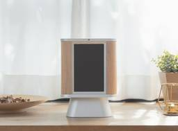
呼びかけると故人の写真を映すAI仏壇「コハコ」発売、49万5000円 10年後の家族に動画を届ける機能も 20 テクノエッジ TechnoEdge
AI仏壇『コハコ』発売49万5000円。写真動画をAIが解析・表示、呼びかけ機能・タイムメッセージ搭載、遺品収納・位牌4本対応。
4日前

AI利用ルール「運用済み」は管理層の35％、ルールがあっても半数近くは「守られているか確かめられない」 デスクワーカー328人調査 テクノエッジ TechnoEdge
社内AI利用ルールは未整備が62.3％、守られているかの把握不足と教育不足、シャドーAIの懸念。
4日前
クマ検知AIの弱点は「野生のクマの映像が集まらない」 飼育施設で距離を変えて撮影、ドローンからも 10 テクノエッジ TechnoEdge
秋田のくまくま園でクマ検知AIのデータ収集実証を実施。距離・角度等条件別に検知範囲を分析し、精度は未公表。今後実環境での検証へ。モリフクロウ連携の対策も検討。
4日前

Amazonとベネッセが子ども向けで連携強化、しまじろうの知育アプリ5本をKids+に 専用デザインのタブレットは4万1980円 テクノエッジ TechnoEdge
AmazonとベネッセがKids+向けにしまじろう知育アプリを5本追加、しまじろうデザインの8.7型端末を発売。
4日前
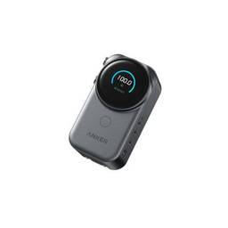
Ankerが変換プラグ内蔵100W充電器を1万1990円で発売、電圧が見えるディスプレイ付きで4台同時充電 1 テクノエッジ TechnoEdge
Ankerが変換プラグ内蔵の100W充電器を発売、4台同時充電・ディスプレイ搭載、USB-C3つ・USB-A1つで最大100W、価格11,990円、100–275V対応、過電圧保護付き。
4日前

ロジ最高峰マウスMX Master 4にスペシャル・エディション発売、クリエーター・デベロッパー版2種の数量限定 テクノエッジ TechnoEdge
ロジクール / Logitech が、フラッグシップマウス MX Master 4 の限定デザインモデル Developer Edition / Creator Edition を数量限定で発売しました。
4日前

Lean で始める契約プログラミング 161 エムスリーテックブログ
こんにちは。 Unit3 / 基盤開発チームを兼務している林です。 Unit3では、主に医学書の電子書籍サービスや、医師の開業サポートなどのサービスを担当しています。 今回は Unit3 テックブログリレー 1 日目の記事です。 Lean で証明付きの安全な開発をするイメージを Gemini で生成しました 定理証明ができるプログラミング言語、Lean Lean というプログラミング言語をご存知でしょうか？ このところ AI で Lean を使って数学などですごい成果が続々と発表されていて、つい先日も Claude を使ってリーマン予想を Lean により証明できたとの発表（Lean コミュニ…
4日前
Galaxy Z Fold8限定カラーが大幅ポイント還元、サムスン オンラインショップでブラックフライデーセール Z Fold8 Ultraなら最大19% テクノエッジ TechnoEdge
サムスンの公式ストア「Samsungオンラインショップ」がブラックフライデーキャンペーンを開始しました。
4日前

CI ランナーを小さくする TypeScript 7 の型チェック設定 11 株式会社ヘンリー エンジニアブログ
はじめにこんにちは！株式会社ヘンリーでSWEをしている ken7253（id:ken7253）です！私は6月からヘンリーに入社し医療ドメインという非常に複雑なドメインに圧倒されていますが、もともと培ってきたフロントエンドエンジニアとしての知見をプロダクトに活かすために様々な改善活動を進めています。今回はその改善活動の一環としてフロントエンドにおける型チェックの最適化について紹介させていただきます。まずは、前提について共有させていただきたいのですが弊社ではTypeScript 7（以下 TS 7）のプレビュー版 (@typescript/native-preview ) を2025年の10月頃より利用しており、現在は最新版の TS 7 を利用して開発を行っています。今回紹介するのは、TS 7 で型チェックを行う CI の job を、メモリの面から見直した話です。devblogs.microsoft.comフロントエンドの CI では、型チェックだけを担う job を 4 CPU・16 GB RAM のランナーで動かしていました。この job を 1 段小さいランナー（2 CPU・8 G
4日前

米2州がGrokを提訴、「性的画像を売りにして、安全だと偽った」 1 テクノエッジ TechnoEdge
米バージニア州とオレゴン州が11月23日、Grokが同意のない性的画像や児童性的虐待コンテンツを生成したとしてSpaceXを提訴。性的画像の生成を売りにしながら、利用者には保護策があると偽っていたと主張しています。
4日前
タワーレコード オンラインに不正アクセス、会員情報約1100万件が流出 パスワードのハッシュ値や住所も 1 テクノエッジ TechnoEdge
タワーレコードオンラインが不正アクセスを受け、約1100万件の会員情報が流出。ログイン情報と個人情報の大半、クレジットカード情報は含まれない。現在調査中でサービス停止、再開時期は未定。
4日前
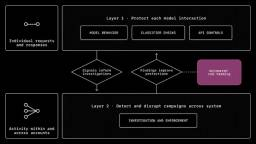
OpenAIが蒸留対策を公開、AIの「思考過程」を抜き取る攻撃の成功率を54%から0.2%に 18
テクノエッジ TechnoEdge
OpenAIは敵対的蒸留対策で推論過程の抽出成功率を54%→0.2%に低下。リクエスト単位の対策と組織的検知の二層防御を導入し、推論を会話履歴に結び付け破棄可能に。
4日前
Gemini 4シリーズのモデルを徹底解説！ 1 G-gen Tech Blog
Google の Gemini 4 モデルファミリー「Hydrogen、Neon、Argon、Carbon」の主要スペック、料金、ベンチマーク、および実務での使い分けを徹底解説します。
4日前
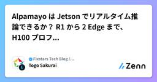
Alpamayo は Jetson でリアルタイム推論できるか？ R1 から 2 Edge まで、H100 プロファイルからの実行時間推定 Fixstars Tech Blog /proc/cpuinfoのフィード
本記事では、自動運転向けの VLA モデル Alpamayo R1 / 1.5 と Alpamayo 2 Edge、そして R1 / 1.5 の推論を高速化するフレームワーク FlashDrive を H100 SXM5 (以下 H100) で実際に実行し、そのプロファイリング結果をもとに RTX PRO 6000、Jetson AGX Thor T5000 (以下 Thor)、Jetson AGX Orin 64 GB (以下 Orin) での実行時間を推定します。本記事の特徴と主な結論は以下の通りです。 本記事の特徴 2026 年 11 月現在で最新の Alpamayo モデルである...
4日前
11/23 (月)

ジェンスン・フアン氏、11日間の不在の後、NVIDIAのCEOに返り咲き 66
テクノエッジ TechnoEdge
NVIDIAの創業者であるジェンスン・フアン氏が、社長兼CEO（代表取締役）として復帰しました。
5日前

RoboParty RPO・RP1のダンス学習の仕組み - ヒューマノイドはどうやって踊りを覚えるのか npaka
「RoboParty」の「RPO」「RP1」のダンス学習の仕組みをまとめました。続きをみる
5日前

11/22 (日)

Obsidian 入門 (2) - Copilot for Obsidian の使い方 1 npaka
「Copilot for Obsidian」にCodexを設定し、ノートの要約・下書き・推敲まで試します。続きをみる
6日前
ニューラルネットワークを“信頼の社会”として読む Zennの「ディープラーニング」のフィード
ニューラルネットワークを「数式の塊」ではなく、“判断と信頼で構成された組織”として読み解く小さな本です。面接官・会議・社長という比喩を使って、内積・行列・誤差逆伝播・活性化関数・重み・バイアスが「何を意味しているのか」を感覚でつかみます。本書の比喩をそのまま動かせる可視化アプリ（https://ofcbj.github.io/nn-book/）も公開しています。
6日前

AIはなぜ「確率の計算」だけで会話や創造、深い推論までできるのか？—基礎から紐解くLLMの仕組みと進化 Zennの「ディープラーニング」のフィード
「ChatGPTなどの生成AIは、結局のところ『次に来る言葉を確率で予測して表示しているだけ』」 AIの仕組みを学び始めると、必ずと言っていいほどこの説明に出会います。しかし、ここで多くの人が一つの素朴な疑問にぶつかります。 「単なる確率計算なら、決まりきった定型文しか作れないのでは？ なぜ見たこともない質問に答えたり、小説を書いたり、難しい数学の問題まで解けたりするのか？」 この記事では、機械学習やディープラーニングの基本的な仕組み（分散表現、Word2Vec、RNN/seq2seq、Transformer、強化学習など）を軸に、単なる「次単語予測」から高度な言語処理能力が生まれるメカ...
6日前


11/21 (土)
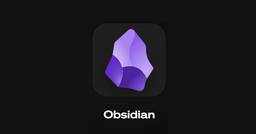
Obsidian 入門 (1) - ノートを作ってリンクでつなぐ npaka
「Obsidian」が生まれた背景から、インストールして最初のノートを作り、リンクでつなぐまでを紹介します。続きをみる
7日前